Fall 2025 archive. This page shows every deliverable of Assignment 4, one card each: Part 1, Part 2, the Part 2 bonus, both extra-credit options, the early-submission bonus and the cross-cutting items, 154 rows in all. Each card shows the TA reference solution for the Husky A200 + UR3 mobile manipulator in the Mars worlds, built with ROS 2 Jazzy and Gazebo Harmonic, with an honest status, its display and a caption whose numbers come from the verified result files. No student work, name or grade appears on this page.
Verified an independent verifier passed it.
Verified with notes an independent verifier passed it with notes.
Fallback an earlier or partial artifact is shown, with its stated reason.
Not done not done, with the reason.
Human step a step left for the course staff, such as the Gradescope upload.
How to read the points: a value can differ between handout versions, so a card may list several. v11 and v3-6 are versions of the Part 2 handout, HA and HB are the handouts of extra-credit options A and B, and codes such as P2-T07, EA-T01 or EB-T17 are autograder test ids.
Draft for review. Publication rule: the reference solution code is never public, and the finished result is shown only once every Assignment 4 deliverable is recorded. This page stays a draft until then, and code-type deliverables appear only as status cards. Still open: B34, ECB13, XC2.
Status of the 154 rows: 0 Verified, 151 Verified with notes, 2 Fallback, 0 Not done, 1 Human step.
Showing 154 of 154 rows.
Part 1 (Part A): Husky + UR3 mobile manipulator
A1 to A33: the rosbag, the screen recording, the autograder tests, the required topics, the components and the package of Part A. 33 rows: 33 Verified with notes.
A1Verified with notes
Deliverable 1: 30 s ROS 2 rosbag of all active topics
Points: 12.5 of Part A 25
Status card: bags are never published.
Two bags were recorded in one reference run. The full recording of all active topics (MCAP) holds 47.38 s, 187,479 messages and 40 topics (9 with 0 messages). The graded download copy (sqlite3, listed topics only, camera topics removed) holds 44.66 s, 57,878 messages and 10 topics in 15.2 MiB. Header-stamp rates in simulation time: /odom 50.0 Hz, /imu 100 Hz, /joint_states 100 Hz, /scan 15.15 Hz; the real-time factor was 0.96. Graders, re-run after the README update: Fall 2025 Part A 23.5/23.5 with the test runner's import fixed; FA26 and SP27 Part 1 19/19 and 19/19.
How it was checked: Independent verifiers recomputed the numbers from the bag and the video and checked the media; a re-verification confirmed the fixes.
A2Verified with notes
Deliverable 2: 30 s screen recording (at least 720p)
Points: 12.5 of Part A 25
Web copy: 1280 x 720, 30 fps, 30.0 s, 0.9 MB.
The 30 s reference screen recording places RViz 2 on the left and Gazebo on the right. It also has a keyboard teleop pane with a neutral prompt, the chapter labels 0-10 s, 10-20 s and 20-30 s, live /cmd_vel and gripper command values, and a gripper close-up in 10-20 s. Submission copy: H.264 High, yuv420p, 1280x720, 30 fps, 900 frames, 30.000 s, moov before mdat; it has 0 black segments and 0 freezes of 3 s or more. Video and bag clocks, measured: video frame 0 shows the RViz capture frame grabbed 0.015 s and the Gazebo capture frame grabbed 0.014 s before the bag's first message, both under one 30 fps frame (0.033 s); the 3D views first move at video t = 0.43 s, 0.13 s after the first non-zero /cmd_vel at t = 0.30 s, and again at 20.43 to 20.47 s after the command at 20.30 s (controller and rendering delay, no drift). On this page the launch line and a parameter label at the top of the teleop pane are covered.
How it was checked: Independent verifiers recomputed the numbers from the bag and the video and checked the media; a re-verification confirmed the fixes.
A3Verified with notes
Autograder 1.1: rosbag and screen recording present
Points: 5
Status card: the evidence for this row is shown in the cards it links to.
The Fall 2025 Part A autograder, run on the reference package with its test runner's import fixed, passes test 1.1 (5 of 5 points): it finds the rosbag (a sqlite3 bag folder with its metadata file) and the screen recording. The whole autograder scores 23.5 of 23.5 points (A1, A30). On a copy without the screen recording, test 1.1 scores 0 of 5 and the total falls to 8.5 points. Run as shipped, only test 2.3 loads (the other three test files fail to import), so it scores 4 points.
How it was checked: An independent verifier recomputed the numbers with its own code from the bag, the screen recording, a re-run of the autograder, the maps and the course pages; a re-verification confirmed the fixes.
A4Verified with notes
Autograder 1.2: bag duration of at least 30 s
Points: 2
Status card: the evidence for this row is shown in the cards it links to.
The graded bag lasts 44.66 s, both by its metadata and by its first and last messages, which meets the 30 s requirement (the grader's floor is 29.5 s); the autograder, run with its import fixed, passes test 1.2 for 2 of 2 points (A1).
How it was checked: An independent verifier recomputed the numbers with its own code from the bag, the screen recording, a re-run of the autograder, the maps and the course pages; a re-verification confirmed the fixes.
A5Verified with notes
Autograder 1.3: required topics, types and minimum rates
Points: 5.5
Status card: the evidence for this row is shown in the cards it links to.
All six graded topics are in the bag with the expected types: /cmd_vel (Twist), /odom (Odometry), /joint_states (JointState), /imu (Imu), /scan (LaserScan) and the gripper command (Float64). Test 1.3 divides each topic's message count by the 44.66 s bag duration and compares the result with a floor: /cmd_vel 9.0 per second (floor 0.04), /odom 48.4 (floor 4), /joint_states 96.6 (floor 4), /imu 96.4 (floor 8), /scan 14.6 (floor 0.8) and the gripper command 0.36 (floor 0.024), so the autograder, run with its import fixed, passes test 1.3 for 5.5 of 5.5 points (A1). Header-stamp rates in simulation time for the four periodic topics: /odom 50.0 Hz, /imu 100 Hz, /joint_states 100 Hz and /scan 15.15 Hz. The handout's spec rates are /odom 50 Hz, /imu 100 Hz and /scan 10 Hz; it gives none for /cmd_vel, /joint_states or the gripper command. /odom and /imu match their spec, while /scan publishes at 15.15 Hz against its 10 Hz spec (A14); test 1.3 checks only minimum rates.
How it was checked: An independent verifier recomputed the numbers with its own code from the bag, the screen recording, a re-run of the autograder, the maps and the course pages; a re-verification confirmed the fixes.
A6Verified with notes
Autograder 1.4: bag integrity
Points: 1
Status card: the evidence for this row is shown in the cards it links to.
The bag's single sqlite3 file opens read-only, passes SQLite's integrity check and holds 57,878 message rows, the same count as its metadata; the autograder, run with its import fixed, passes test 1.4 for 1 of 1 point (A1, A30).
How it was checked: An independent verifier recomputed the numbers with its own code from the bag, the screen recording, a re-run of the autograder, the maps and the course pages; a re-verification confirmed the fixes.
A7Verified with notes
Autograder 2.1: video stream present and at least 30 s
Points: 4
Status card: the evidence for this row is shown in the cards it links to.
The screen recording holds one H.264 video stream and no audio and lasts 30.000 s (900 decoded frames at 30 fps), meeting the 30 s requirement (the grader accepts 28 s or more); the autograder, run with its import fixed, passes test 2.1 for 4 of 4 points (A2).
How it was checked: An independent verifier recomputed the numbers with its own code from the bag, the screen recording, a re-run of the autograder, the maps and the course pages; a re-verification confirmed the fixes.
A8Verified with notes
Autograder 2.2: video at least 720p
Points: 2
Status card: the evidence for this row is shown in the cards it links to.
The screen recording is 1280 x 720, so its short edge meets the 720 px minimum; the autograder, run with its import fixed, passes test 2.2 for 2 of 2 points (A2).
How it was checked: An independent verifier recomputed the numbers with its own code from the bag, the screen recording, a re-run of the autograder, the maps and the course pages; a re-verification confirmed the fixes.
A9Verified with notes
Autograder 2.3: bag timeline matches the three 10 s video windows (anti-cheat)
Points: 4 (all three windows required)
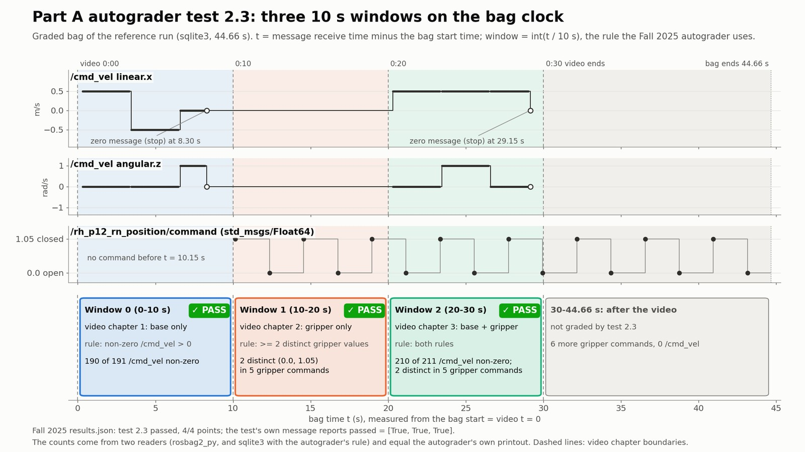
Test 2.3 of the Fall 2025 Part A autograder, replayed on the reference bag (44.66 s). The grader places every message on the bag clock (receive time minus the bag start time) and cuts it into 10 s windows. From 0 to 10 s, 190 of 191 /cmd_vel messages are non-zero (base only). From 10 to 20 s the gripper command takes 2 distinct values (0.0 and 1.05) in 5 messages (gripper only). From 20 to 30 s, 210 of 211 /cmd_vel messages are non-zero and the gripper again takes 2 distinct values in 5 messages (both). All three windows pass, so the test gives 4 of 4 points. The screen recording starts at the bag's first message, so the dashed chapter lines at 10, 20 and 30 s mark the same instants in the video; the last 14.66 s of the bag are not graded by this test.
How it was checked: An independent verifier recomputed every number from the bag and checked the images; a re-verification confirmed the fixes.
A10Verified with notes
Required topic /cmd_vel (geometry_msgs/msg/Twist)
Points: Within A1; checked by 1.3 and 2.3
Status card: the evidence for this row is shown in the cards it links to.
/cmd_vel is recorded as geometry_msgs/msg/Twist (unstamped), the type the live topic showed during the take, with 402 messages in all. On the bag clock that test 2.3 uses, 190 of the 191 messages in 0 to 10 s and 210 of the 211 messages in 20 to 30 s are non-zero, and none fall in 10 to 20 s (A9).
How it was checked: An independent verifier recomputed the numbers with its own code from the bag, the screen recording, a re-run of the autograder, the maps and the course pages; a re-verification confirmed the fixes.
Status card: the evidence for this row is shown in the cards it links to.
/odom (nav_msgs/msg/Odometry) holds 2,161 messages with a median header-stamp step of 0.020 s, 50.0 Hz in simulation time (48.4 Hz by receive time over the 44.66 s bag); the odom to base_link transform appears 2,151 times on /tf (A1).
How it was checked: An independent verifier recomputed the numbers with its own code from the bag, the screen recording, a re-run of the autograder, the maps and the course pages; a re-verification confirmed the fixes.
A12Verified with notes
Required topic /joint_states (all joints)
Points: Within A1
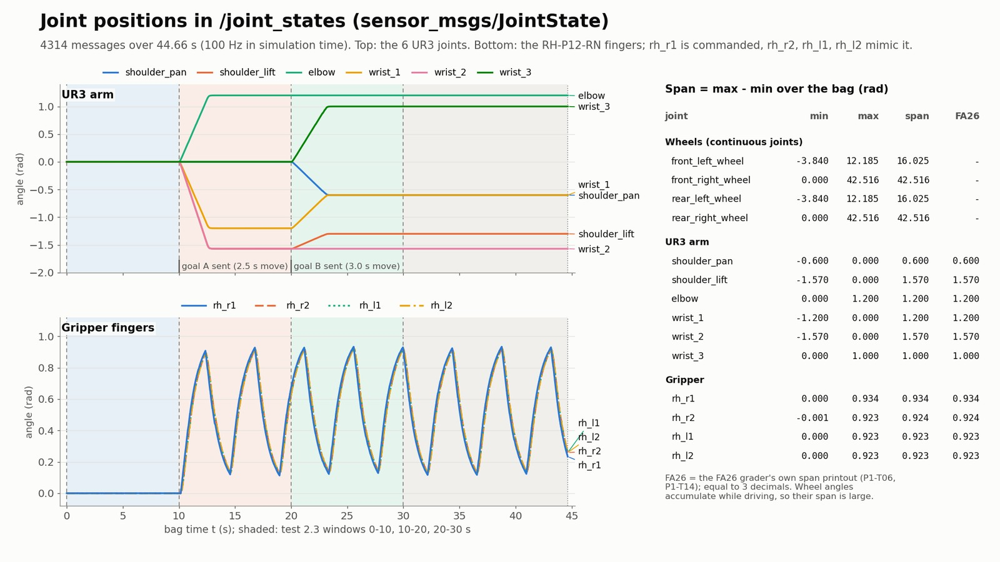
Joint positions from /joint_states over the whole bag (4314 messages in 44.66 s, 100 Hz in simulation time). The UR3 arm moves to a first pose at 10 s (a 2.5 s move) and to a second pose at 20 s (a 3.0 s move); 4 of its 6 joints change in each move. The RH-P12-RN fingers close and open with every gripper command from t = 10.15 s; rh_r1 is driven and rh_r2, rh_l1 and rh_l2 mimic it. The span table (maximum minus minimum over the bag) equals the FA26 grader's own printout to 3 decimals for the 6 arm joints and the 4 finger joints, for example shoulder_lift 1.570 rad and rh_r1 0.934 rad. The wheel angles add up while the base drives, so their spans are large (16.025 rad on the left wheels, 42.516 rad on the right).
How it was checked: An independent verifier recomputed every number from the bag and checked the images; a re-verification confirmed the fixes.
A13Verified with notes
Required topic /imu (sensor_msgs/msg/Imu, 100 Hz)
Points: Within A1
Status card: the evidence for this row is shown in the cards it links to.
/imu (sensor_msgs/msg/Imu) holds 4,304 messages with a median header-stamp step of 0.010 s, 100 Hz in simulation time (A1).
How it was checked: An independent verifier recomputed the numbers with its own code from the bag, the screen recording, a re-run of the autograder, the maps and the course pages; a re-verification confirmed the fixes.
A14Verified with notes
Required topic /scan (LaserScan, 10 Hz, 720 samples, plus or minus 90 degrees, 0.1-30 m)
Points: Within A1; 1.3 checks rate and presence only
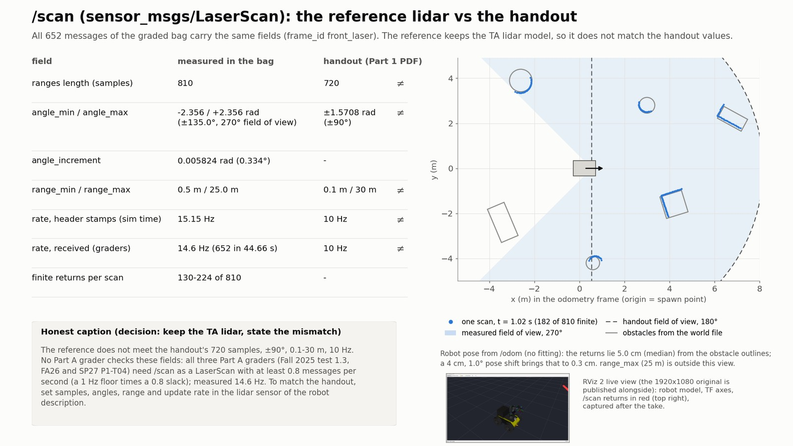
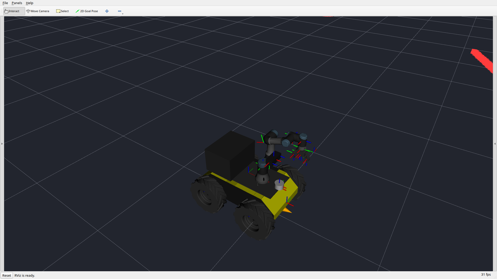
The reference run keeps the TA lidar model, which does not match the handout. All 652 /scan messages carry 810 samples over ±135 degrees (270 degree field of view), range 0.5 to 25 m, frame front_laser, published at 15.15 Hz in simulation time (14.6 Hz received over the bag). The handout asks for 720 samples over ±90 degrees, 0.1 to 30 m at 10 Hz. No Part A grader checks these fields: all three Part A graders (Fall 2025 test 1.3, FA26 and SP27 P1-T04) need /scan as a LaserScan with at least 0.8 messages per second (a 1 Hz floor times a 0.8 slack). On the right, the scan at t = 1.02 s (182 finite returns) is drawn with the /odom pose over the obstacle outlines from the world file; the returns lie a median 5.0 cm from the outlines. The RViz 2 screenshot shows the robot model, its TF axes and the scan in red.
How it was checked: An independent verifier recomputed every number from the bag and checked the images; a re-verification confirmed the fixes.
Points: Within A1; optional in 1.3, required by 2.3
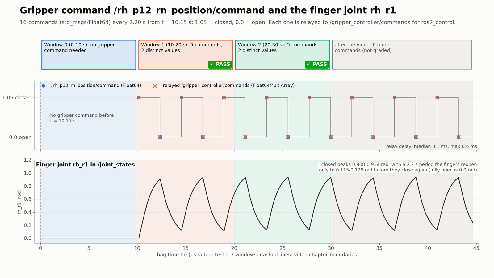
Web copy: 640 x 360, 30 fps, 10.0 s, 0.1 MB.
The gripper is commanded on /rh_p12_rn_position/command (std_msgs/Float64, 1.05 closed, 0.0 open): 16 commands, one every 2.20 s from t = 10.15 s, each relayed to /gripper_controller/commands for ros2_control (median delay 0.1 ms). Test 2.3 sees 5 commands with 2 distinct values in the 10 to 20 s window and again in the 20 to 30 s window. The lower plot is the driven finger joint rh_r1: it closes to 0.908 to 0.934 rad and, with only 2.2 s between commands, reopens only to 0.113 to 0.128 rad rather than all the way to 0. The close-up clip covers bag time 10 to 20 s (chapter 2 of the video): 146 simulated camera frames at about 14.7 Hz, each held until the next one arrives, with the command in force and rh_r1 printed on the frame. The handout gripper is the Robotis RH-P12-RN; a UR arm with a Robotiq gripper (the "Q" option) is also accepted with full marks (lecture slides 3, 4 and 23).
How it was checked: An independent verifier recomputed every number from the bag and checked the images; a re-verification confirmed the fixes.
A16Verified with notes
Topic /clock (simulation time)
Points: Within A1 (12.5) as an active topic; not checked by the Fall 2025 autograder
Status card: the evidence for this row is shown in the cards it links to.
The simulation clock /clock is recorded with 45,562 messages in the full all-topics bag (A1) and with 43,039 messages in the graded bag, covering 43.04 s of simulation time in 44.66 s (a real-time factor of 0.96); robot_state_publisher ran on simulation time. The Fall 2025 autograder never checks this topic.
How it was checked: An independent verifier recomputed the numbers with its own code from the bag, the screen recording, a re-run of the autograder, the maps and the course pages; a re-verification confirmed the fixes.
A17Verified with notes
Topics /tf and /tf_static
Points: Within A1 (as active topics); no separate points
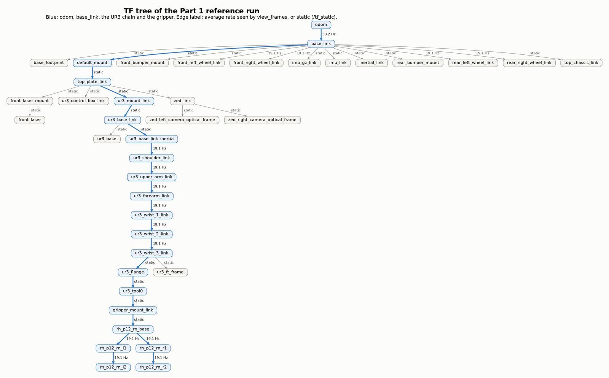
The /tf and /tf_static rows of the bag table. /tf holds 2,973 messages with 13,659 transforms over 15 frame pairs: odom to base_link from the diff drive controller and 14 joint transforms (6 arm joints, 4 wheels, 4 fingers) from robot_state_publisher. They arrive at 66.6 Hz over the bag. /tf_static is a single latched message with all 24 fixed transforms. The TF tree (A29) shows how both join odom to the gripper.
How it was checked: An independent verifier recomputed every number from the bag and checked the images; a re-verification confirmed the fixes.
A18Verified with notes
Video segment 1: mobile base teleop, 0-10 s
Points: Within A2 and 2.3
Plays 0 s to 10 s of the A2 video (web copy 1280 x 720).
Chapter 'Mobile base: forward / backward / turn', 0-10 s of the A2 recording. Keys were sent to the teleop terminal: forward (i) 0.3-3.4 s, backward (comma) 3.5-6.5 s, turn left (j) 6.6-8.2 s, stop (k) 8.3 s, at teleop speed 0.50 m/s and turn 1.00 rad/s. 190 of the 191 /cmd_vel messages in [0, 10) s are non-zero. The player shows this chapter of the A2 video.
How it was checked: Independent verifiers recomputed the numbers from the bag and the video and checked the media; a re-verification confirmed the fixes.
A19Verified with notes
Video segment 2: gripper open/close, 10-20 s
Points: Within A2 and 2.3
Plays 10 s to 20 s of the A2 video (web copy 1280 x 720).
Chapter 'Gripper open / close', 10-20 s of the A2 recording. The base stays still (0 /cmd_vel messages) while /rh_p12_rn_position/command toggles 1.05 (closed) and 0.0 (open) every 2.2 s from t = 10.15 s. The video shows a picture-in-picture close-up from a fixed simulated camera with the live command value. The UR3 was commanded to the gripper pose at t = 10.00 s with a 2.5 s trajectory; measured in /joint_states, all six joints are within 0.05 rad of that pose from t = 12.59 s and within 0.01 rad from t = 12.74 s. The fingers are open at t = 14.52 s (rh_r1 0.13 rad) and closed at t = 16.59 s (rh_r1 0.91 rad); they first look closed at t = 12.15 s (rh_r1 0.875 rad, 96 % of that closing phase's 0.908 rad peak). With the 2.2 s period the fingers reopen only to 0.113 to 0.128 rad before closing again; fully open is 0.00 rad. The player shows this chapter of the A2 video.
How it was checked: Independent verifiers recomputed the numbers from the bag and the video and checked the media; a re-verification confirmed the fixes.
A20Verified with notes
Video segment 3: base and gripper together, 20-30 s
Points: Within A2 and 2.3
Plays 20 s to 30 s of the A2 video (web copy 1280 x 720).
Chapter 'Base and gripper together', 20-30 s of the A2 recording. The robot drives forward (20.3-23.4 s), forward with a left turn (u, 23.5-26.5 s) and forward again (26.6-29.1 s), then stops at 29.2 s. Meanwhile the gripper keeps toggling (0.0 and 1.05 both present) and the UR3 moves to a second pose at 20 s. 210 of the 211 /cmd_vel messages in [20, 30) s are non-zero. The close-up inset is used only in 10-20 s: in this chapter the toggle shows on the small fingers in the Gazebo pane and in the command and rh_r1 values printed on the frame (from a topic logger recorded during the run). The player shows this chapter of the A2 video.
How it was checked: Independent verifiers recomputed the numbers from the bag and the video and checked the media; a re-verification confirmed the fixes.
A21Verified with notes
Part A submission package: folder layout, naming and README.txt
Points: 0 separate (the FA26/SP27 grader deducts 1.0 manually when the README is missing)
Status card: a code-type deliverable (code, configuration, a script or a README), shown only as a status card because the reference solution code is never public.
The Part A package holds README.txt, the screen recording and the graded bag (sqlite3): 17,927,580 bytes in 4 files (17.1 MiB, 17.9 MB), against a 100 MB / 256-file upload limit. The README covers the versions (ROS 2 Jazzy, gz sim 8.11.0, gz_ros2_control 1.2.19, rosbag2 0.26.11), the world (six static boxes and cylinders 4.1 to 7.1 m from the robot, so /scan has returns), how the run was launched and recorded, a topic table with header-stamp rates, the 0-10 / 10-20 / 20-30 s timeline and the odometry (7.03 m driven, 4.70 rad of heading change), the Robotiq full-marks note from the lecture slides (3, 4 and 23), the video name the handout asks for, and an 'AI use' section with the course AI-use statement. The FA26 README check finds all four required items (9081 characters), and the AI-use gate passes it.
How it was checked: Independent verifiers recomputed the numbers from the bag and the video and checked the media; a re-verification confirmed the fixes.
A22Verified with notes
Part A PDF report (listed in the Gradescope submission format)
Points: 0 stated
Status card: the report quotes commands or file names of the code, so it is not linked.
A two-page reference report for Part A: the setup, the Gazebo and RViz 2 views, the bag table (10 topics, 57,878 messages, 44.66 s), measured rates, the TF chain, the test 2.3 timeline, notes on the lidar and the gripper, the package layout with grader scores and an AI-use statement. On this package the Fall 2025 Part A autograder gives 23.5/23.5 once its test runner's import is fixed, and the FA26 and SP27 Part 1 graders give 19/19 and 19/19. The submission guide lists a Part A PDF report but states no points for it, so this report is an optional example.
How it was checked: An independent verifier recomputed every number from the bag and checked the images; a re-verification confirmed the fixes.
A23Verified with notes
Gazebo simulation of Husky A200 + UR3 + gripper (13 DOF; Robotis RH-P12-RN preferred, Robotiq full marks)
Points: 0 separate (graded through A1 and A2)
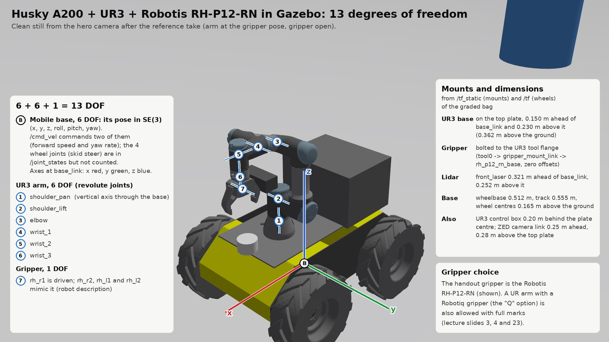
The simulated robot in Gazebo after the reference take, with its 13 degrees of freedom labelled: 6 for the pose of the mobile base in SE(3) (/cmd_vel drives two of them, forward speed and yaw rate), 6 revolute UR3 joints (markers 1 to 6) and 1 gripper joint (marker 7, rh_r1, which the other three finger joints mimic). The joint markers are projected into the camera image from the recorded link poses; marker 1 is drawn 0.10 m down the vertical pan axis so that it does not cover marker 2. The mount card is read from the graded bag (/tf_static for the mounts, the wheel joint transforms on /tf for the wheelbase and track): the UR3 base sits 0.150 m ahead of and 0.230 m above base_link (0.362 m above the ground), the gripper is bolted to the tool flange with zero offsets, the lidar is 0.321 m ahead and 0.252 m up, and the base has a 0.512 m wheelbase and a 0.555 m track. A UR arm with a Robotiq gripper (the "Q" option) is also accepted with full marks (lecture slides 3, 4 and 23).
How it was checked: An independent verifier recomputed every number from the bag and checked the images; a re-verification confirmed the fixes.
A24Verified with notes
Component: robot_state_publisher, Gazebo plugins or ros2_control controllers, and ros_gz_bridge (one design, captioned)
Points: 0 separate
Status card: the evidence for this row is shown in the cards it links to.
The reference simulation uses the ros2_control design, the TA's alternative to the handout's Gazebo-plugin design (a differential-drive plugin and joint-position controller plugins): robot_state_publisher on simulation time; the Gazebo ros2_control plugin with the Clearpath A200 base, whose four wheel joints take velocity commands; four active controllers (a joint state broadcaster, a differential-drive base controller, an arm controller and a gripper controller); and a ros_gz_bridge that carries the clock, the laser scan, the IMU, the RGB-D camera's image, depth image, camera info and point cloud, and a second camera's left image, all from Gazebo to ROS. Both Part 1 designs are described in the configuration card (A31).
How it was checked: An independent verifier recomputed the numbers with its own code from the bag, the screen recording, a re-run of the autograder, the maps and the course pages; a re-verification confirmed the fixes.
A25Verified with notes
Component: keyboard teleoperation
Points: 0 separate
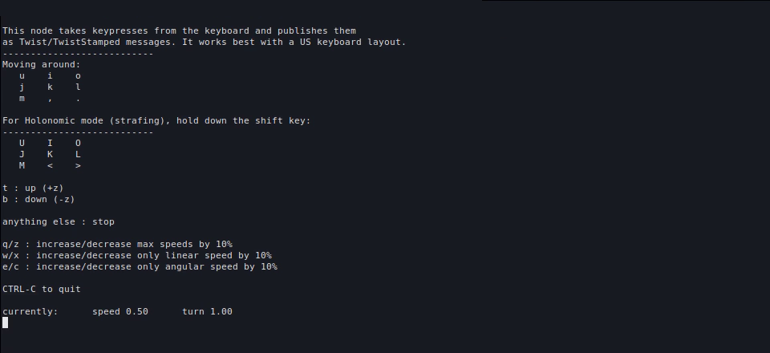
Keyboard teleoperation (teleop_twist_keyboard) publishes geometry_msgs/msg/Twist on /cmd_vel; during the recording /cmd_vel had 1 publisher, the teleop node. The image shows the teleop pane of the recording with the node's key help; its launch line and a parameter label are covered on this page.
How it was checked: Independent verifiers recomputed the numbers from the bag and the video and checked the media; a re-verification confirmed the fixes.
A26Verified with notes
Component: automated gripper controller node
Points: 0 separate
Status card: a code-type deliverable (code, configuration, a script or a README), shown only as a status card because the reference solution code is never public.
The reference uses the C++ gripper node of handout p.17 (the guide's tree lists a Python script instead). It publishes std_msgs/Float64 on /rh_p12_rn_position/command, 1.05 closed and 0.0 open, every 2.2 s instead of the handout's 5 s. A relay forwards each value to the ros2_control gripper controller (/gripper_controller/commands, Float64MultiArray), clamped to the rh_r1 limits [-0.001, 1.101] rad. The bag holds commands 1 to 16: 8 at 1.05 and 8 at 0.0.
How it was checked: Independent verifiers recomputed the numbers from the bag and the video and checked the media; a re-verification confirmed the fixes.
A27Verified with notes
Component: 30 s bag recording script
Points: 0 separate
Status card: a code-type deliverable (code, configuration, a script or a README), shown only as a status card because the reference solution code is never public.
The handout's recording script (PDF p.40-42) has three problems: its duration option only splits the bag, so the script never returns; recording every topic also records the camera images (4.29-5.10 GB bags on the TA stack); and its topic check omits the gripper topic. The fixed script records the listed topics only into sqlite3 under a 45 s time limit, checks for /rh_p12_rn_position/command, counts down 10 s and checks the bag against a 40 MB budget. In the reference run the time limit ended the recording as intended; the bag was 16 MB on disk (15.2 MiB in the bag info), and 2 messages were lost in transport.
How it was checked: Independent verifiers recomputed the numbers from the bag and the video and checked the media; a re-verification confirmed the fixes.
A28Verified with notes
One-command launch script (the guide's consistent-launch script)
Points: 0
Status card: a code-type deliverable (code, configuration, a script or a README), shown only as a status card because the reference solution code is never public.
One launch script brings up a 9-pane terminal session: the simulation, relays plus a converter, RViz, keyboard teleop, the gripper node, the recorder (waiting for Enter) and three rate monitors for /odom, /imu and /scan, which read 48.6, 97.2 and 14.7 Hz at about 25.5 s.
How it was checked: Independent verifiers recomputed the numbers from the bag and the video and checked the media; a re-verification confirmed the fixes.
A29Verified with notes
TF tree and RViz verification
Points: 0
TF tree of the reference run (39 edges, from the view_frames tool). The highlighted chain runs from odom to base_link, through the top plate and the UR3 mount to the six UR3 links, then ur3_flange, ur3_tool0, gripper_mount_link, rh_p12_rn_base and the finger links. Moving edges show the rate view_frames measured (50.2 Hz for odometry, 19.1 Hz for the joints); fixed edges are static. The tf2_echo tool read a translation of [0.607, 0.194, 0.297] m from odom to rh_p12_rn_base before the bag started, with the arm at its start pose, and the bag's own transforms at its start round to the same printed translation (0.53 mm apart; tf2_echo prints millimetres). The RViz 2 screenshot shows the robot model with its TF axes and the scan.
How it was checked: An independent verifier recomputed every number from the bag and checked the images; a re-verification confirmed the fixes.
A30Verified with notes
FA26/SP27 Part A grader results card (19 automated points, 6 manual points)
Points: 25 (19 automated + 6 manual)
Status card: the detailed card shows commands, file paths, grader thresholds or machine details, so it stays with the course staff.
The FA26 and SP27 Part 1 graders each score 19/19 on the reference package. Their measurements include rates of /odom 48.4, /joint_states 96.6, /imu 96.4 and /scan 14.6 Hz against floors of 5, 5, 10 and 1 Hz, an odometry path of 7.02 m with |yaw| 4.70 rad, gripper spans of 0.92-0.93 rad and a 30.0 s recording at 1280x720. The manual items are a staff assessment scored 6/6, for a total of 25/25. Once this video's SHA-256 is on the semester denylist, one check drops to 0.5 by design, giving 18.5/19. The Fall 2025 Part A autograder gives 23.5/23.5 with its test runner's import fixed; as shipped, only test 2.3 imports, worth 4 of the 23.5 points.
How it was checked: Independent verifiers recomputed the numbers from the bag and the video and checked the media; a re-verification confirmed the fixes.
A31Verified with notes
Robot description and controller and bridge configuration files
Points: 0 on its own
Status card: a code-type deliverable (code, configuration, a script or a README), shown only as a status card because the reference solution code is never public.
Configuration of the two Part 1 designs: the ros2_control design that runs in the reference (robot description, the Clearpath A200 wheel velocity command interfaces, the controller configuration and the simulation bridge) and the handout design, kept as a reference package and not run (wheel and arm-mount joints, one joint-position controller per joint, a six-topic bridge without a gripper topic).
How it was checked: An independent verifier checked every number against its cited source and the grader runs; a re-verification confirmed the fixes.
A32Verified with notes
Part A late-submission policy (course rule)
Points: -20% per day after the one free 2-day late submission; nothing accepted after 5 days
Course late policy for assignments and projects (course policies page): one deliverable in the whole semester may be up to 2 days late without penalty; every other late deliverable, and that one past its 2 days, loses 20 % per day; submissions more than five days late are not accepted; and the parts of an assignment may not be submitted at different times to take the late penalty on only one part. Extension requests are considered only in extraordinary circumstances. The Part 2 rubric states its own late rule (B35).
How it was checked: An independent verifier recomputed the numbers with its own code from the bag, the screen recording, a re-run of the autograder, the maps and the course pages; a re-verification confirmed the fixes.
A33Verified with notes
Environment kits the deck announced for each architecture (setup scripts for 64-bit ARM and AMD64, a conda/mamba environment file, ISO files, Docker files, UTM and VirtualBox images, a no-GPU demo script)
Points: 0 (resources provided by the TA, not student deliverables)
Status card: the detailed card shows commands, file paths, grader thresholds or machine details, so it stays with the course staff.
Environment kits announced in the Assignment 4 slides: 2 of 9 items are available (the eight-terminal launch script published on this site, and the official Canonical Ubuntu download pages, linked and not hosted); the setup scripts for 64-bit ARM and AMD64, the conda environment file, the Docker files, the UTM and VirtualBox images and the no-GPU demo script are not done.
How it was checked: An independent verifier checked every number against its cited source and the grader runs; a re-verification confirmed the fixes.
Part 2 (Part B): SLAM on Mars
B1 to B41: MUSt3R, point clouds, navigation and MoveIt 2, the recordings, the report, the code, the maps, the metrics and the challenges of Part B. 41 rows: 40 Verified with notes, 1 Fallback.
B1Verified with notes
MUSt3R: model setup (512 model, GPU/CPU fallback)
Points: v11: 5 of category 1 (15); v3-6: 10
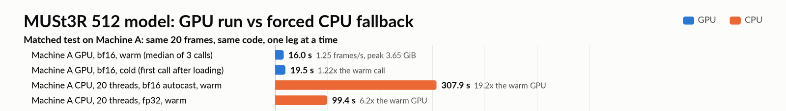
MUSt3R 512 model, GPU run against a forced CPU fallback in a matched test on Machine A (20 frames of the Mars Thanksgiving scene, 512x384, 20 memory images, PyTorch 2.7.0): GPU warm 16.0 s, GPU cold 19.5 s, CPU bf16 autocast 307.9 s (19.2x the warm GPU), CPU fp32 99.4 s (6.2x). In its CPU rows the GPU is hidden and the reference timing script falls back to the CPU. Camera position error after a Sim(3) alignment: 6.9 cm GPU, 9.5 cm CPU bf16, 7.0 cm CPU fp32. The card on this page shows the matched test only.
How it was checked: An independent verifier recomputed the timings and camera errors from the run logs; a re-verification confirmed the fixes.
B2Verified with notes
MUSt3R: multi-view capture from Mars world (robot) cameras
Points: v11: 5; v3-6: 10
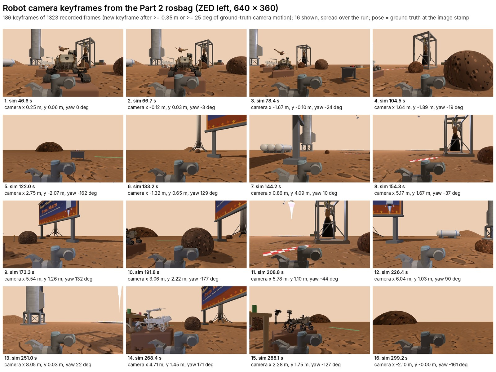
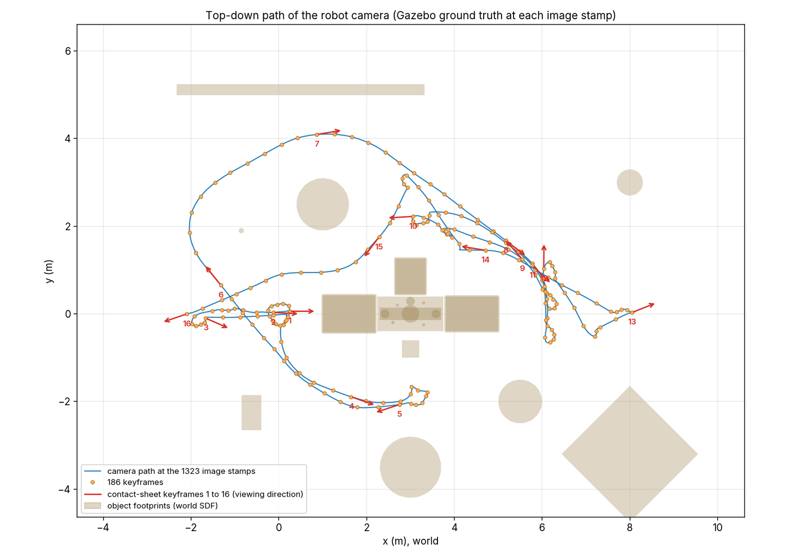
Keyframes from the robot's ZED left camera in the recorded Part 2 mission (Mars Thanksgiving world v3). A new keyframe is taken when the ground-truth camera pose has moved at least 0.35 m or turned at least 25 degrees since the last keyframe; the pose is Gazebo ground truth interpolated at each image stamp. 186 of the 1,323 recorded frames are keyframes. The contact sheet shows 16 of them with simulation time and camera pose, and the top-down plot shows the camera path among the object footprints. The bag holds two camera topics from the same moving camera: left RGB at about 4 Hz and registered depth at 5 Hz; 675 of the 1,323 RGB frames have a depth image with the same stamp. The compressed image topic has 1,323 frames in the full bag (the grader needs at least 20).
How it was checked: An independent verifier recomputed the numbers from the mission bag and the raw data with its own code; a re-verification confirmed the fixes.
B3Verified with notes
MUSt3R: reconstruction quality (run SOTA SLAM once the mobile manipulator works)
Points: v11: 5; v3-6: 10
Video 1280 x 720, 30 fps, 20.0 s (also on the SLAM-ing Mars page).
Static recording of world v3 (both turkeys parked, one above and one under the table): 200 RGB frames of 640 x 480 on one closed camera loop of radius 2.5 m around the table (15.76 m path). Each model received only the RGB frames, with no depth, poses, intrinsics or labels. Each reconstruction is then moved into the ground-truth frame with its own Sim(3), a Umeyama fit on its 200 camera centres, and compared with a ground-truth cloud built from the simulator's depth and poses (2 cm voxels; scores on a scene crop of 5 m radius around the table centre). The video films all six clouds with one orbiting virtual camera, with the same crop, voxel size and point size. Camera ATE (RMSE), median accuracy, median completeness, F-score at 5 cm, F-score at 10 cm and F-score at 5 cm on objects only: VGGT-Omega (best) 2.4 cm, 2.8 cm, 1.0 cm, 0.800, 0.906, 0.60; VGGT 3.3 cm, 7.8 cm, 1.7 cm, 0.524, 0.710, 0.32; TTT3R 7.8 cm, 32.5 cm, 3.1 cm, 0.342, 0.530, 0.20; MUSt3R 5.9 cm, 11.7 cm, 3.7 cm, 0.301, 0.576, 0.25; CUT3R 48.4 cm, 31.7 cm, 6.7 cm, 0.206, 0.346, 0.12. Best model by a rule fixed before the results (highest scene-crop F-score at 5 cm, ties broken by the lower camera ATE): VGGT-Omega. Accuracy is the median distance from the prediction to ground truth, completeness the median distance from ground truth to the prediction. 69 % of the scored ground-truth points lie on flat ground (at most 15 cm high), which makes the 5 cm F-score lenient to sideways errors. The last column scores only the objects (points more than 15 cm high in both clouds): VGGT-Omega and VGGT keep the first two places and CUT3R the last, while MUSt3R and TTT3R trade places, so read the middle of the table as a tie. CUT3R's camera track drifts (ATE 48.4 cm), so its cloud visibly does not line up with ground truth. MUSt3R, CUT3R and TTT3R place parts of the sign and the background too close, which shows as floating sheets in their tiles. Black patches at the seat ends of the ground-truth tile are ground that no camera saw. Video 20 s, 1280 x 720, 30 fps; the render crop is 3.75 m around the table centre.
How it was checked: Independent page reviewers recomputed the numbers with their own code and checked the frames, links and media.
B4Verified with notes
Point cloud: PointCloud2 output with correct TF frames
Points: v11: 4 of category 2 (11); v3-6: 8
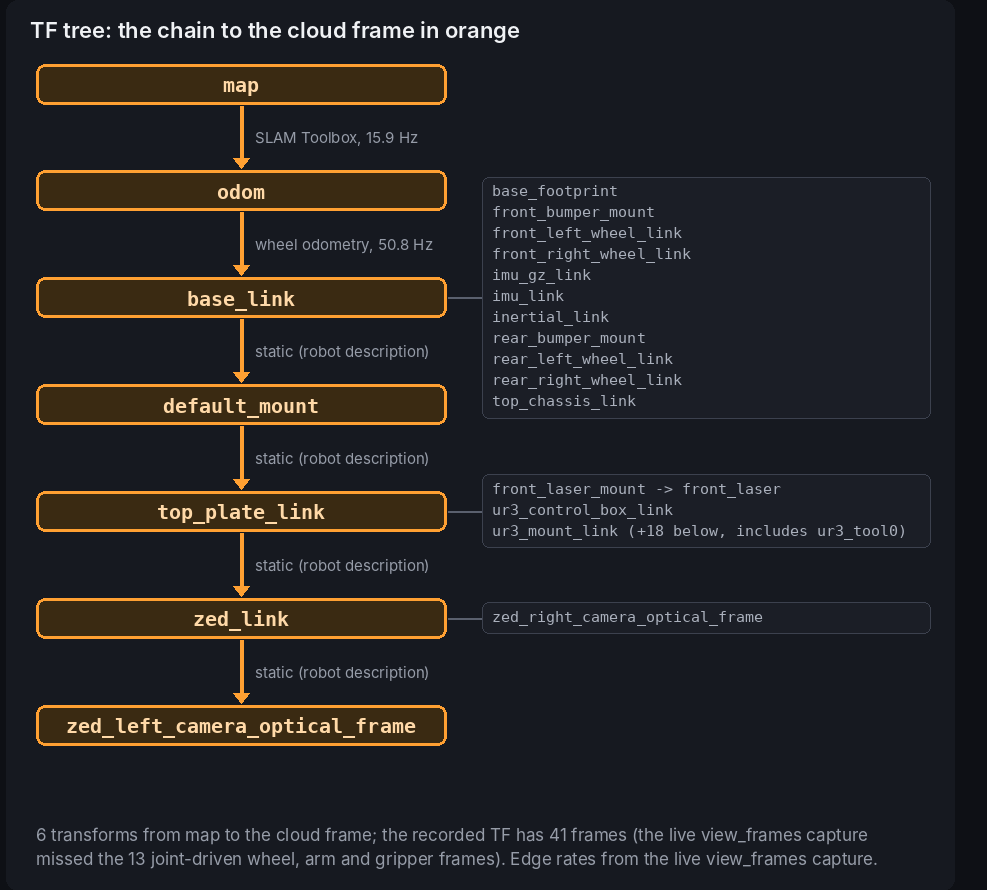
Live point cloud output: /zed/depth/points is a sensor_msgs/PointCloud2 at 5.0 Hz (simulation time) with header frame_id zed_left_camera_optical_frame. The TF tree resolves map to that frame through odom, base_link and the static camera mount (6 transforms, orange). Captured while Nav2 drove the waypoints.
How it was checked: An independent verifier recomputed the numbers from the bag and the simulator ground truth with its own reader and checked the media; a re-verification confirmed the fixes.
B5Verified with notes
Point cloud: filtering and segmentation (voxel, outliers, ground)
Points: v11: 4; v3-6: 7
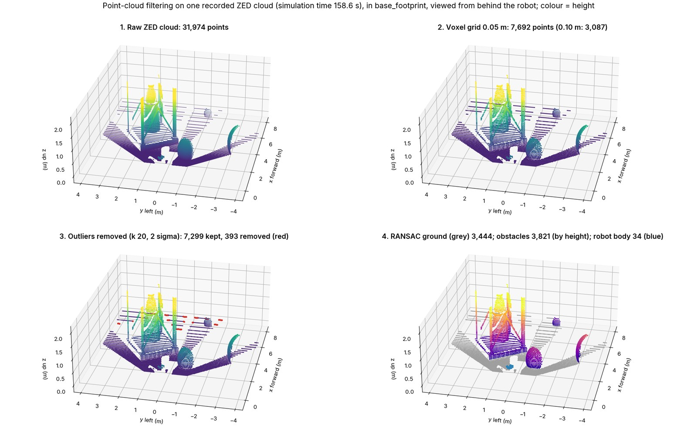
Point-cloud filtering on one recorded ZED cloud (simulation time 158.6 s) in the robot's base_footprint frame: raw 31,974 points; voxel grid 0.05 m: 7,692 points (0.10 m: 3,087); statistical outlier removal (20 neighbours, 2 sigma): 7,299 kept, 393 removed; RANSAC ground plane 3,444 points (grey), obstacles 3,821 points (coloured by height), robot body 34 points. Computed with NumPy and SciPy (k-d tree).
How it was checked: An independent verifier recomputed the numbers from the mission bag and the raw data with its own code; a re-verification confirmed the fixes.
B6Verified with notes
Point cloud: RViz2 visualization
Points: v11: 3; v3-6: 5
Web copy: 960 x 540, 30 fps, 15.0 s, 2.0 MB.
Live RViz2 view of /zed/depth/points (5.0 Hz) coloured by height (AxisColor on z in the map frame, -0.15 m red to 2 m magenta, 3 s decay) with the robot model, recorded while Nav2 drove the robot. 15 s of simulation time at 1x.
How it was checked: An independent verifier recomputed the numbers from the bag and the simulator ground truth with its own reader and checked the media; a re-verification confirmed the fixes.
B7Verified with notes
Mars navigation: obstacle detection from point clouds
Points: v11: 4 of category 3 (11); v3-6: 7
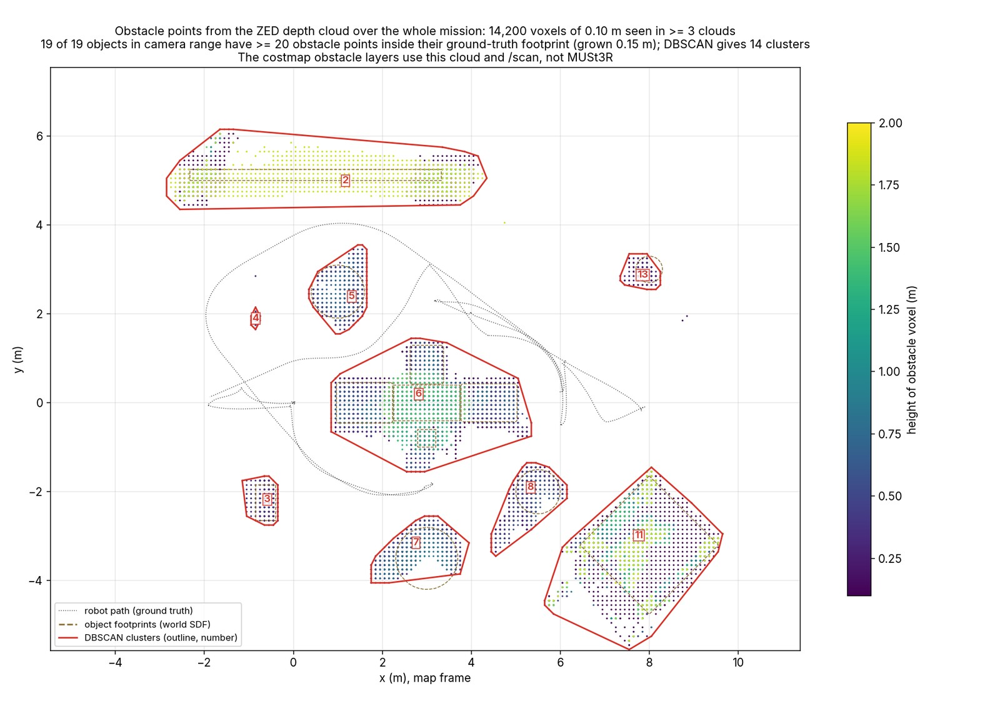
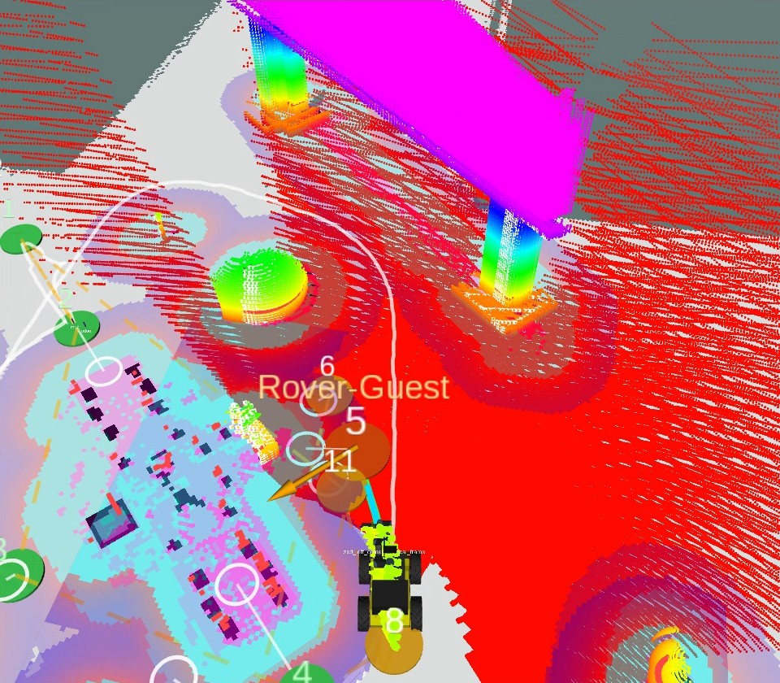
Obstacle detection from the depth cloud over the whole mission: the obstacle points of all 1,671 ZED clouds are placed in the map frame with the robot's TF, kept in 0.10 m voxels seen in at least 3 clouds (14,200 voxels) and grouped with DBSCAN into 14 clusters; DBSCAN does not separate touching objects (one cluster joins the table, a chair and the three rover guests). Checked against the simulator's ground truth, all 19 scene objects that came within camera range have at least 20 obstacle points inside their footprint grown by 0.15 m (the two moving turkeys in single clouds at their simulated positions), and the centre of those points lies a median 0.14 m from the model centre. The two largest offsets (1.6 m for the fuel tank farm and 1.5 m for the starship-style rocket) belong to large objects seen in only 59 and 85 clouds, where the centre of the observed points is not the model centre. The Nav2 costmap's obstacle layers were fed by the ZED depth cloud and /scan, not by MUSt3R; the MUSt3R cloud was recorded and shown separately. Safe zone: inflation radius 0.95 m.
How it was checked: An independent verifier recomputed the numbers from the mission bag and the raw data with its own code; a re-verification confirmed the fixes.
B8Verified with notes
Mars navigation: waypoint following (10 or more; the v11 12-waypoint Mars Thanksgiving list) with Nav2/MoveIt2
Web copy: 960 x 540, 10 fps, 60.9 s, 4.8 MB. Excerpt from 121 s to the end of the source video.
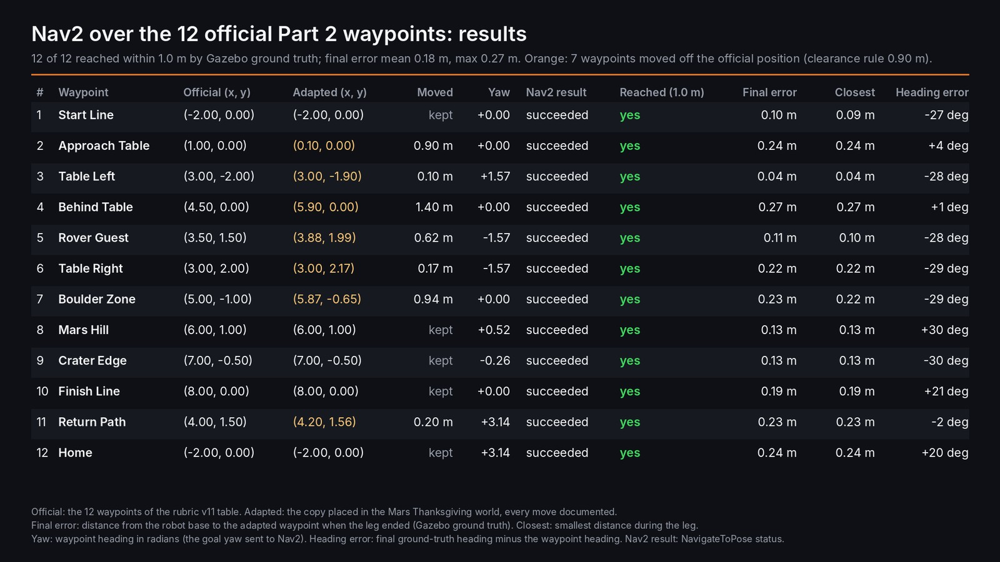
Nav2 (NavigateToPose per goal, NavFn planner, MPPI controller at 20 Hz) drives the Husky A200 + UR3 over the 12 official Part 2 waypoints in the Mars Thanksgiving world, ending at Home. RViz2 on the left (SLAM map, costmaps fed by the lidar and the live ZED point cloud, Nav2 plan, MPPI path, waypoints), Gazebo on the right. 12 of 12 reached within 1.0 m by Gazebo ground truth; final error mean 0.18 m, max 0.27 m; 52.1 m driven in 255 s of simulation time, counted from the start of the mapping spin (14.6 s spinning in place, then 240.8 s for the 12 goals including a 6 s stop at each); the on-screen mission clock counts from the same start and reads about 4:16 when Mission complete appears. The video runs at 1.5x simulation time. The simulator was capped at 0.25 of real time (measured mean 0.23). 7 of the 12 waypoints were moved off the official position for clearance in this world; the end table lists the official and the adapted coordinates of every waypoint. On the status bar, filtered points are the non-ground cloud on a 10 cm voxel grid and obstacle points (0.1 m to 2 m above the ground) use a 5 cm grid, so the obstacle count can be the larger one.
How it was checked: An independent verifier recomputed the numbers from the bag and the simulator ground truth with its own reader and checked the media; a re-verification confirmed the fixes.
B9Verified with notes
Mars navigation: collision-free path planning around obstacles
Points: v11: 2; v3-6: 8; legacy A*/RRT* + DWA/TEB: 15; tutorial split: Basic Navigation through the crater field 15 and Obstacle Avoidance 10 (not additional)
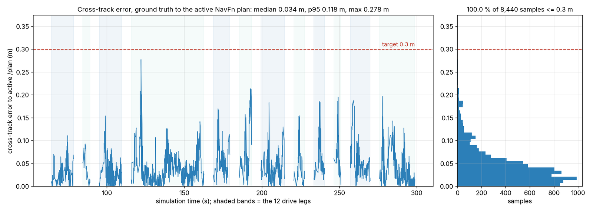
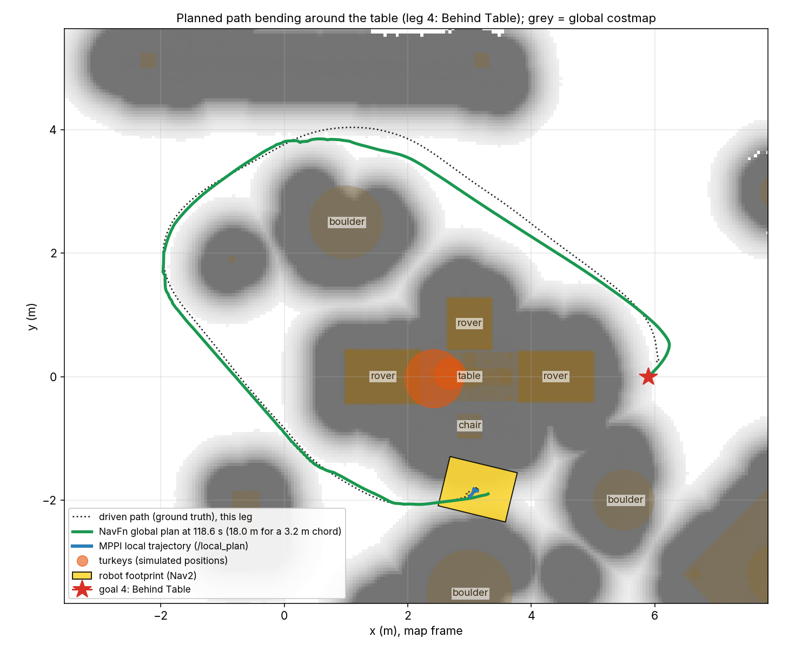
Path tracking on the 12 drive legs: the cross-track error from the robot's ground-truth position to the active NavFn global plan has a median of 0.034 m, a p95 of 0.118 m and a maximum of 0.278 m; all 8,440 samples are within the 0.3 m target. Zero-collision counter: 0 contacts in 16,715 ground-truth poses; the closest approach is 0.10 m between the Nav2 footprint (1.12 m by 0.82 m) and a rover's booster seat, with parts lower than 0.10 m (ground decorations) skipped (counting them, 0.05 m to a decorative pebble of that seat, still no contact), and the closest laser return is 0.59 m (sensor minimum 0.5 m). For leg 4 (Behind Table) the global plan bends around the table: 18.0 m of path for a 3.2 m straight-line distance. Footprints come from the world SDF geometry (the two turkeys as circles of radius 0.25 m and 0.47 m) and the robot pose from Gazebo ground truth.
How it was checked: An independent verifier recomputed the numbers from the mission bag and the raw data with its own code; a re-verification confirmed the fixes.
B10Verified with notes
MoveIt2 motion planning for the UR3 on the Husky (also listed in the Part 1 setup announcement)
Points: No separate points (graded through B16)
Web copy: 1280 x 720, 30 fps, 43.6 s, 1.1 MB.
MoveIt 2 on the simulated Husky A200 + UR3: a move to home, then 2 cycles of home, pre-grasp, extended, home. Each motion is planned with OMPL RRTConnect through move_group (plan only) and then executed on arm_controller (FollowJointTrajectory). 7 of 7 motions were planned and executed successfully; median planning time 0.040 s, median trajectory 9.30 s of simulation time. Left: RViz MotionPlanning with the planning scene and the planned trajectory; right: Gazebo. The ZED camera box on the top plate collides with the usual shoulder-forward arm configuration, so IK is seeded with over-the-top arm configurations. The clip plays at 1.75x simulation time throughout (no idle stretch was long enough to be shortened); the HUD shows the playback speed and the simulation time since the start of the clip. On the HUD, TRAJECTORY belongs to the motion named in the step line, and LAST RESULT and LAST CONTROLLER show the last finished motion.
How it was checked: An independent verifier recomputed the numbers from the bag and checked the clips frame by frame; a re-verification confirmed the fixes.
B11Verified with notes
Pick-and-place: Mars rock sample collection
Points: GUIDE bullet (no points); tutorial sample collection 15; metric of 5 or more rocks 15 (not additional); 80% grasp success criterion
Web copy: 1280 x 720, 30 fps, 55.0 s, 1.5 MB.
Five pick-and-place trials with MoveIt 2, one per Mars rock sample, judged by the simulator ground truth (rock centre inside the bin box): 4 of 5 samples ended in the collection bin (80 %). Rock a: OMPL RRTConnect found no path to the approach (pre-grasp) pose within the 5 s planning limit in 4 planning requests (2 tries), so no grasp was tried and the rock stayed on the bench. Rocks b, c, d and e: friction grasps (finger angle 0.698 to 0.805 rad, lift 5.8 to 5.9 cm) and drops into the bin, every arm motion of the trial executed successfully (for rocks c, d and e the first plan of one motion failed MoveIt's solution check, a collision in the planned path, and a second plan was used). Picks try a friction grasp first; the fallback, a Gazebo DetachableJoint attached when the gripper closes, was armed but never used, because every grasp that was tried held by friction (0 attaches in 5 trials). The base first creeps 0.59 m to the sample bench using ground truth (docked within 0.009 m). The planning scene (bench, bin, rocks, red cube, table) is built from the simulator's ground-truth poses, not from perception. Free motions use OMPL RRTConnect; the descend and lift are Cartesian paths. Idle time (planning, settling) is shortened in the video; the HUD shows the playback speed of every frame and the simulation time since the start of the clip. On the HUD, TRAJECTORY belongs to the motion named in the step line, LAST RESULT and LAST CONTROLLER show the last finished motion, and MOTIONS OK counts the motions inside this clip, which starts with the docking, before trial 1.
How it was checked: An independent verifier recomputed the numbers from the bag and checked the clips frame by frame; a re-verification confirmed the fixes.
B12Verified with notes
Sensor fusion: EKF state estimation (legacy)
Points: Legacy 15 (superseded)
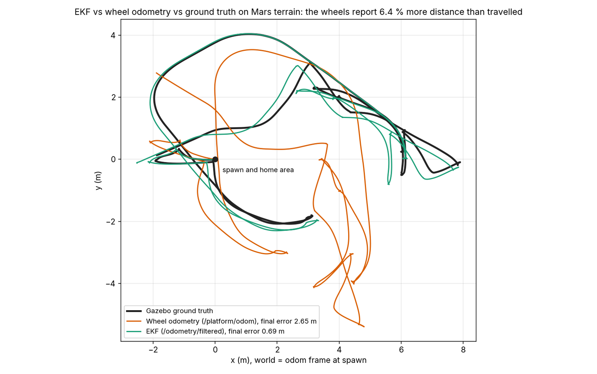
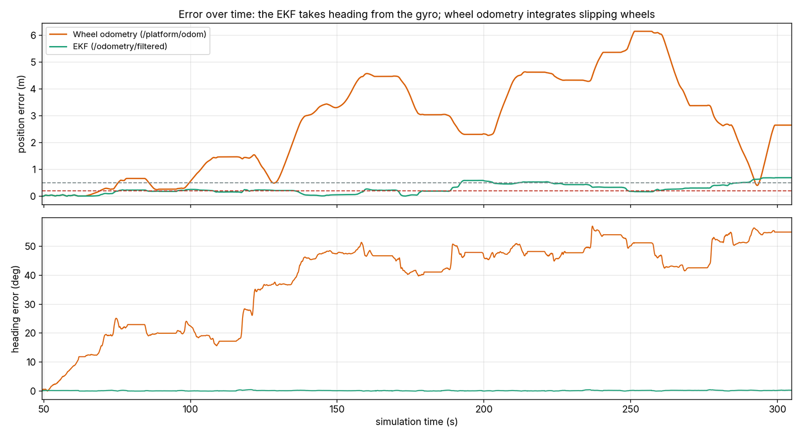
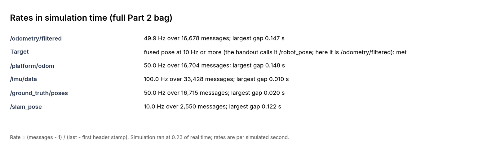
EKF sensor fusion (legacy rubric item): the course EKF node fuses wheel odometry (/platform/odom, 50 Hz) and the IMU gyro (/imu/data, 100 Hz) with fixed noise values; GPS was not used (no GPS topic in the bag). On the Mars terrain the wheels report 6.4 % more distance than the robot travelled (55.4 m of wheel odometry against 52.1 m of ground truth over the mission) and the wheel heading drifts by up to 57 degrees, so wheel odometry ends 2.65 m from ground truth (RMSE 3.23 m), while the EKF takes its heading from the gyro and ends 0.69 m off (RMSE 0.33 m, heading error at most 0.5 degrees). The fused pose /odometry/filtered was published at 49.9 Hz of simulation time (target: at least 10 Hz). The EKF ran next to the navigation stack with its TF remapped, so Nav2 and SLAM Toolbox used the wheel-odometry TF.
How it was checked: An independent verifier recomputed the numbers from the mission bag and the raw data with its own code; a re-verification confirmed the fixes.
B13Verified with notes
Full-system autonomous integration demo (legacy)
Points: Legacy 25 (superseded)
Web copy: 960 x 540, 10 fps, 74.0 s, 5.0 MB. Excerpt from 83 s to the end of the source video.
One continuous run with no resets: a mapping spin (SLAM Toolbox), Nav2 goals 1 to 4 at the first four of the 12 course waypoints as adapted to this world (three of them moved by 0.1 to 1.4 m for clearance), Nav2 goal 5 to the sample bench, a docking creep of 0.65 m using ground truth (docked within 0.037 m), a MoveIt pick of rock b into the bin, an undocking creep of 0.58 m back to the staging pose using ground truth (within 0.024 m), then Nav2 goal 6 back to the start. 6 of 6 Nav2 goals succeeded, each 0.06 to 0.24 m from its goal by ground truth at the moment Nav2 reported success; the pick of rock b succeeded (1 of 1 by ground truth) with a friction grasp that held at the first close check, so the DetachableJoint fallback (a Gazebo attach on gripper close) was not used; the return-to-start error, measured 5 s later with the base at rest (it coasted 0.06 m closer after goal 6 succeeded), is 0.19 m by ground truth (target under 1.0 m). One pick motion, the short Cartesian retreat after the drop, was not executed because MoveIt covered too little of the path; the arm then went home with planned joint motions. The bag holds 326 s of simulation time with /tf, /map, /odom, /plan, /joint_states, the gripper commands (/rh_p12_rn_position/command, relayed to /gripper_controller/commands) and /ground_truth/poses. Idle time (planning, settling) is shortened in the video; the HUD shows the playback speed of every frame and the simulation time since the mission start. During the pick the chase camera is behind the robot, so an inset in the Gazebo pane replays the arm, rock b, the bench and the bin from the ground-truth poses in the mission bag, with a ground-truth line saying whether rock b is in the bin; the HUD card LAST MOVEIT / CONTROLLER shows the last finished arm motion.
How it was checked: An independent verifier recomputed the numbers from the bag and checked the clips frame by frame; a re-verification confirmed the fixes.
B14Verified with notes
Screen recording: Gazebo simulation
Points: v11: 4 of category 4 (17)
Web copy: 960 x 540, 30 fps, 50.0 s, 1.9 MB.
Gazebo chapter (50 s of simulation time, played at 1x): the Husky A200 with the UR3 arm drives the Part 2 waypoints in the Mars Thanksgiving world. Mars gravity (3.711 m/s^2) is set in the world file, and the IMU measured a mean of 3.711 m/s^2 (standard deviation 0.020) over 33,428 samples. The simulator ran at 0.23 of real time while recording; the chapter shows simulation seconds 115.5 to 165.5.
How it was checked: An independent verifier recomputed the numbers from the mission bag and the raw data with its own code; a re-verification confirmed the fixes.
B15Verified with notes
Screen recording: RViz2 display
Points: v11: 4
Web copy: 960 x 540, 30 fps, 40.0 s, 4.0 MB.
RViz2 chapter (40 s of simulation time, played at 1x): the live ZED point cloud coloured by height, the TF frames and the robot model during the mission (simulation seconds 120 to 160).
How it was checked: An independent verifier recomputed the numbers from the mission bag and the raw data with its own code; a re-verification confirmed the fixes.
B16Verified with notes
Screen recording: MoveIt2/Nav2 planning and execution
Points: v11: 5
Web copy: 960 x 540, 15 fps, 74.5 s, 6.0 MB.
Nav2 and MoveIt 2 at work (74 s, 1920x1080, 3 chapters; RViz2 on the left, Gazebo on the right). In the 12-waypoint run, Nav2 plans and drives the Husky A200 to waypoint 4 (Behind Table) and stops 0.265 m from the goal by Gazebo ground truth. Then, from the MoveIt 2 runs, two excerpts: MoveIt 2 plans and executes a cycle of UR3 motions, and picks rock b. Playback is about 1.5x simulation time; idle stretches of the MoveIt 2 part are shortened.
How it was checked: An independent verifier recomputed the numbers and checked the package build and test logs and the media; a re-verification confirmed the fixes.
B17Verified with notes
Screen recording: terminal windows
Points: v11: 4
Status card: this recording or log shows terminal commands, which this page does not publish.
Terminal chapter of the Part 2 recording (75 s of screen capture played at 2x, 37.5 s): the node list, topic list, topic rates and topic details of the running stack, then the tail of the launch log, with a neutral prompt and masked endpoint identifiers. The screen holds still for 2 to 3 s between rate prints, which arrive once per simulated second (about 4 s of real time while the simulator ran near 0.25 of real time).
How it was checked: An independent verifier recomputed the numbers from the mission bag and the raw data with its own code; a re-verification confirmed the fixes.
B18Verified with notes
Part 2 screen recording file (5 min)
Points: v11 75-point table: 17 (B14 to B17: 4 + 4 + 5 + 4); first (175-point) build: 40 for the screen-recording category; v3-6: 3-minute demo; legacy video: 10
Status card: this recording or log shows terminal commands, which this page does not publish.
Part 2 screen recording of the reference run (289 s, 1920x1080, 7 chapters): Gazebo simulation, RViz2 point clouds and TF, Nav2 and MoveIt 2 planning and execution, terminal windows, and mission highlights (the last two of the 12 Nav2 waypoints, then the pick of rock b and the drive back to the start). Each chapter opens with a title card that gives its playback speed; still terminal screens and idle stretches are shortened. The Gazebo, RViz2 and Nav2/MoveIt 2 chapter recordings are shown in B14, B15 and B16.
How it was checked: An independent verifier recomputed the numbers and checked the package build and test logs and the media; a re-verification confirmed the fixes.
B19Verified with notes
Part 2 rosbag: sensor topics (and the bag file)
Points: v11 75-point build: 5; first (175-point) build: Sensor Topics 10 of the Rosbag Recording category 20, shared with B20; legacy 'ROSbag Recordings (25)' covers all bags
Status card: bags are never published.
Topic tables of the Part 2 recording: the full bag (MCAP, 1.61 GB, 334.3 s of simulation time, 662,662 messages, 39 topics) and the upload-size bag (82.0 MB, the same 39 topics and duration with capped rates, 137,341 messages). Each row gives the message type, count and rate in simulation time. The topics the grader or the rubric needs (/scan, /imu, /odom, the camera, /tf, /tf_static, /map, /plan, /local_costmap/costmap, /goal_pose and the point clouds) each have a count above zero in both bags, and both bags are longer than 300 s.
How it was checked: An independent verifier recomputed the numbers from the mission bag and the raw data with its own code; a re-verification confirmed the fixes.
B20Verified with notes
Part 2 rosbag: point-cloud topics (MUSt3R and filtered)
Points: v11: 4; first (175-point) build: Point Cloud Topics 10 of the Rosbag 20
Status card: bags are never published.
Point-cloud topics of the Part 2 rosbag, computed on the recorded robot camera stream: /must3r/pointcloud (156 windows in the full bag, 31 in the upload-size bag) and /must3r/pointcloud_filtered (155 and 31), each in the camera optical frame of its newest image. One replayed window holds 30000 raw points and 13830 after filtering. The replay computed 159 windows; the replay recorder was stopped before it wrote its final chunk, so the last 3 raw and the last 4 filtered clouds were not saved.
How it was checked: An independent verifier recomputed the numbers from the bag and the simulator ground truth with its own reader and checked the media; a re-verification confirmed the fixes.
B21Verified with notes
Technical report (4-page IEEE; states the Mars world option)
Status card: the report quotes commands or file names of the code, so it is not linked.
Part 2 technical report of the reference solution (4 pages, IEEE conference format): the Mars Thanksgiving world (Option 4), the system, waypoints and Nav2 results, MoveIt 2 results, the MUSt3R reconstruction against ground truth, the rosbag and the package, with 4 figures, 3 tables, 9 references and an AI-use section. 85 numerical claims in the text are traced to their source files.
How it was checked: An independent verifier recomputed the numbers and checked the package build and test logs and the media; a re-verification confirmed the fixes.
B22Verified with notes
Results and analysis (metrics, screenshots, Mars terrain analysis)
Points: v11: 3; v3-6: 5
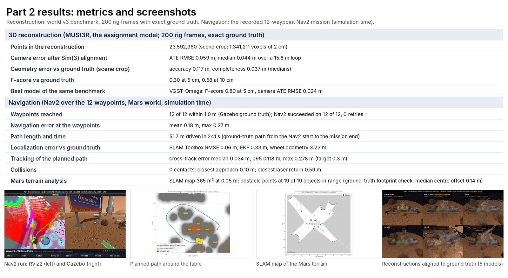
Results table of the Part 2 reference solution with four screenshots. Reconstruction (200-frame camera-rig benchmark in the same world): MUSt3R, the assignment model, gives 23,592,960 points, a camera ATE RMSE of 0.059 m after Sim(3) alignment and an F-score of 0.30 at 5 cm; the best model of that benchmark, VGGT-Omega, reaches 0.80. Navigation (recorded mission): 12 of 12 waypoints reached within 1.0 m, mean error at the waypoints 0.18 m, 51.7 m driven in 241 s of simulation time (ground-truth path from the Nav2 start to the mission end), localization RMSE 0.06 m with SLAM Toolbox.
How it was checked: An independent verifier recomputed the numbers from the mission bag and the raw data with its own code; a re-verification confirmed the fixes.
B23Verified with notes
Code organization: the must3r_nav package (GitHub branch and tag)
Points: v11: 3; the legacy 'Source Code (30)' is the whole Part 2 code deliverable (EKF, path planning nodes, SLAM configuration, launch files), not points for code organization
Status card: a code-type deliverable (code, configuration, a script or a README), shown only as a status card because the reference solution code is never public.
The must3r_nav ament_python package of the reference solution: 8 nodes installed as console scripts, 5 launch files, configuration and an RViz2 layout; colcon build and colcon test pass (7 of 7 unit tests of the path planner). Local git repository: branch submission, tag v1.0 at commit c1b2530, 11 commits.
How it was checked: An independent verifier recomputed the numbers and checked the package build and test logs and the media; a re-verification confirmed the fixes.
B24Verified with notes
Code comments and README
Points: v11: 3
Status card: a code-type deliverable (code, configuration, a script or a README), shown only as a status card because the reference solution code is never public.
README of the must3r_nav package (9,029 characters): ROS 2 Jazzy setup and build, the launch and run instructions, the world used (Option 4), error handling and an AI-use section, with a commented excerpt of one node.
How it was checked: An independent verifier recomputed the numbers and checked the package build and test logs and the media; a re-verification confirmed the fixes.
2D SLAM with SLAM Toolbox from the laser scans. The clip plays all 733 /map messages of the bag in order (24 frames per second, 30.5 s) with the robot's ground-truth path: the robot first turns 360 degrees on the spot (simulation seconds 50 to 62), half of the final known area is mapped at 87 s and 90 % at 171 s, and the picture holds still where consecutive maps are unchanged. The final map has 804 by 736 cells of 0.05 m (40.2 m by 36.8 m) with 364.6 m^2 known, a 5 m scale bar and the 12 waypoints. Beginner 2D crater map: the crater arc near (-10, -10) cut from the SLAM Toolbox map of the earlier navigation demo in the same world, with the crater model outline.
How it was checked: An independent verifier recomputed the numbers from the mission bag and the raw data with its own code; a re-verification confirmed the fixes.
B26Verified with notes
3D point-cloud map of the Mars terrain
Points: Shares the tutorial Map Generation 15 (2D/3D map) with B25
Video 960 x 540, 30 fps, 20.0 s (also on the SLAM-ing Mars page).
Video: the VGGT-Omega cloud (1 cm voxels) after its Sim(3) alignment, with the ground-truth camera path as a white line and VGGT-Omega's own 200 predicted camera centres as orange dots, which follow the loop: camera ATE 2.4 cm RMSE (median 1.3 cm, max 6.9 cm). Still: ground truth drawn as light-grey dots on top of the VGGT-Omega cloud (orange, shaded by its own brightness) with the ground below 15 cm removed, in a 3/4 view of the dinner and a top view with a 1 m scale bar; where the grey dots sit on orange surfaces, the reconstruction matches the true geometry. Scene-crop scores: F-score 0.800 at 5 cm and 0.906 at 10 cm, median accuracy 2.8 cm, median completeness 1.0 cm (the accuracy and completeness in the video label are these medians). The still draws the model in one orange hue instead of its own colours, because the grey rovers could not be told apart from the grey ground-truth dots. Video 20 s, 960 x 540, 30 fps; still 1600 x 900.
How it was checked: Independent page reviewers recomputed the numbers with their own code and checked the frames, links and media.
Loop closure, clear vs dust, with one definition for every row: a graph node is a revisit when an earlier node lies within 1 m in ground truth after at least 10 m of driving; it counts as closed when it carries an accepted loop link to such an earlier node. RTAB-Map in world v3 (clear): 276 of 288 revisit nodes closed (95.8 %), 2 of 2 revisit passes (laps 2 and 3) closed, 418 revisit loop links; lap 1's only revisit node is its last node (158), which is not closed. SLAM Toolbox in an earlier lidar comparison (a different Mars world, same route in both conditions): clear 21 of 137 (15.3 %), dust storm 56 of 137 (40.9 %), each closing its single revisit pass; its pose error RMSE was 0.06 m clear and 0.636 m in the dust storm, so the extra dust-storm closures came with a much worse pose estimate. RTAB-Map was not run in dust. The pose-graph figure shows the RTAB-Map graph before and after optimization with its 418 revisit links.
How it was checked: An independent verifier recomputed the numbers from the RTAB-Map database and the bag with its own code; a re-verification confirmed the fixes.
B28Verified with notes
Performance metric: map completeness (above 90% on Mars)
Points: 15 (table value, not additional)
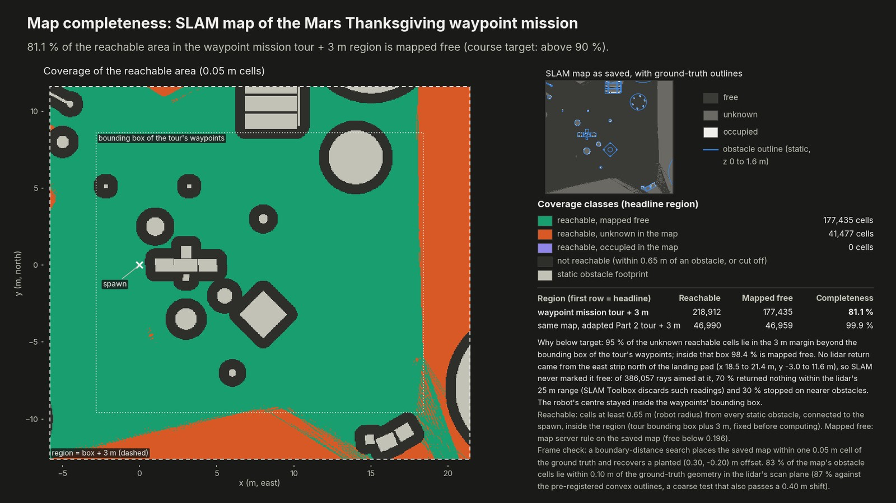
Map completeness of the SLAM map of the Mars Thanksgiving waypoint mission: 81.1 % of the reachable area in the tour + 3 m region is mapped free (177,435 of 218,912 reachable cells), below the course target of above 90 %. 95 % of the unknown reachable cells lie in the 3 m margin beyond the bounding box of the tour's waypoints; inside that box 98.4 % is mapped free. No lidar return came from the east strip north of the landing pad: of 386,057 rays aimed at it, 70 % returned nothing within the lidar's 25 m range and 30 % stopped on nearer obstacles. On the adapted Part 2 tour + 3 m region the same map is 99.9 % complete.
How it was checked: An independent verifier recomputed the coverage numbers with its own code; a re-verification confirmed the fixes.
B29Verified with notes
Performance metric: localization error
Points: 10 (table value, not additional)
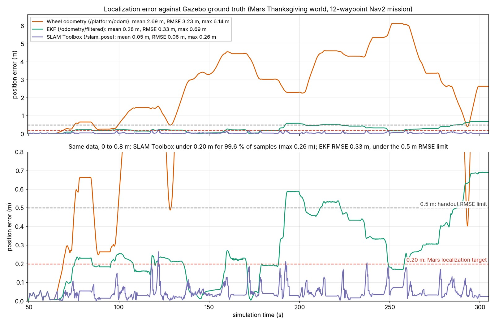
Localization error against Gazebo ground truth over the mission (simulation seconds 49.5 to 304.8), measured as planar distance with no alignment. SLAM Toolbox (/slam_pose): mean 0.05 m, RMSE 0.06 m, maximum 0.26 m, under 0.20 m for 99.6 % of samples. EKF: mean 0.28 m, RMSE 0.33 m, maximum 0.69 m, inside the handout's 0.5 m RMSE limit but above the 0.20 m Mars target. Wheel odometry: RMSE 3.23 m. Dashed lines mark 0.20 m and 0.5 m.
How it was checked: An independent verifier recomputed the numbers from the mission bag and the raw data with its own code; a re-verification confirmed the fixes.
B30Verified with notes
Mars world: sensor plugins, Mars gravity, and stating which world was used ('SLAMing on Mars')
Points: No points of its own
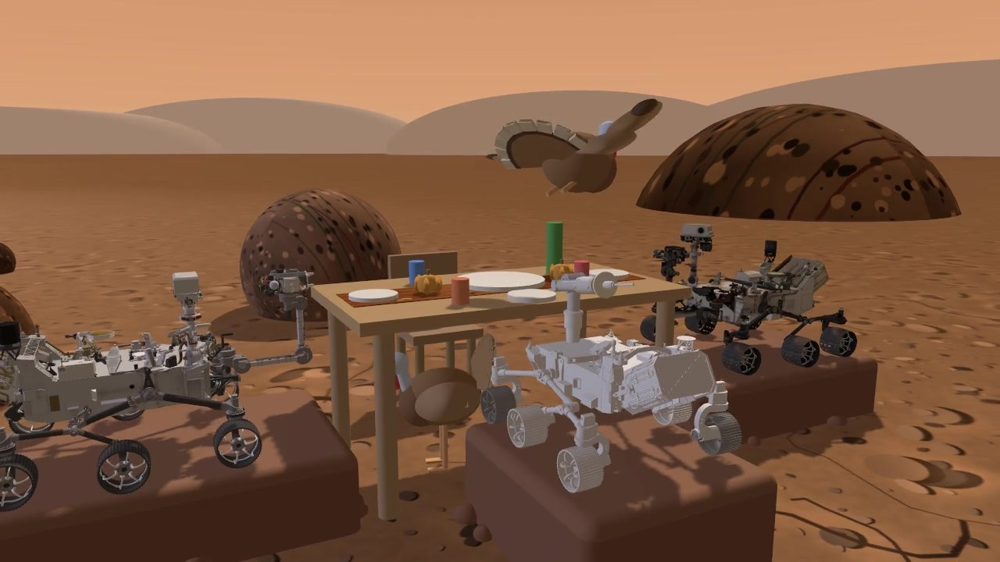
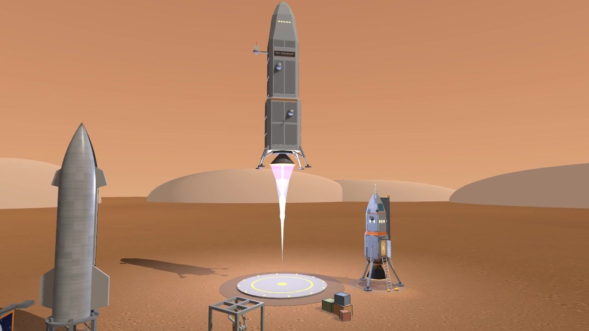
The Part 2 reference mission ran in a copy of the Mars Thanksgiving world v3 (rubric Option 4, the Mars Thanksgiving World) that adds a start line, a checkered finish line and the pick-and-place props: a sample bench, five small rock samples, a red cube, a sample bin and an orange ball on a tee. Its world file loads the Physics, Sensors, IMU, Contact, User Commands, Scene Broadcaster and Particle Emitter systems, with the Sensors system rendering through OGRE 2 as the rubric's sensor-plugin fix asks, steps ODE physics every 1 ms and sets Mars gravity to 3.711 m/s^2; during the mission the IMU's vertical acceleration averaged 3.711 m/s^2 (standard deviation 0.020 m/s^2) over 33,428 samples (B14). The two stills show world v3 itself, without those additions: the dinner table with both turkeys (one flying above it, one running under it) and the three rover guests, and the rockets and ships of the Mars base. The rovers in them carry no real logos, flags or lettering.
How it was checked: An independent verifier recomputed the numbers with its own code from the bag, the screen recording, a re-run of the autograder, the maps and the course pages; a re-verification confirmed the fixes.
B31Verified with notes
Not an A4 deliverable: graduate SOTA-SLAM paper presentation (4-credit students; Nov 21 and Dec 3, 5 and 10, 2025)
Points: Separate graduate presentation component, not part of the A4 points; rubric: Technical Understanding 40%, Clarity & Organization 30%, Critical Analysis 20%, Q&A 10%
Not an Assignment 4 deliverable: the graduate SOTA-SLAM paper presentation for 4-credit students, held on Nov 21 and Dec 3, 5 and 10, 2025. Each student gave a 15-minute talk plus 5 minutes of Q&A on an assigned state-of-the-art SLAM paper (14 papers in all); slides were due exactly one week before the talk, and TA office hours one week before the talk, for feedback on the slides, were mandatory. Grading: technical understanding 40 %, clarity and organization 30 %, critical analysis 20 %, Q&A 10 %. Details are on the course presentations page.
How it was checked: An independent verifier recomputed the numbers with its own code from the bag, the screen recording, a re-run of the autograder, the maps and the course pages; a re-verification confirmed the fixes.
B32Verified with notes
Mars Mission showcase: 2-minute highlight video (#MarsCS498GC)
Points: None (invitation)
Web copy: 960 x 540, 30 fps, 120.0 s, 3.0 MB.
Two-minute highlight reel: the Mars Thanksgiving world, the 12-waypoint Nav2 run, MoveIt 2 picks, the best 3D reconstruction orbit, the VGGT-Omega 4D playback and the dust storm, with a #MarsCS498GC end card. The Nav2 run uses the 12 official waypoints as adapted to this world (7 moved 0.10 m to 1.40 m for clearance). In the pick segment rock samples b and c go into the collection bin with friction grasps; picks try a friction grasp first, and the fallback, a Gazebo DetachableJoint attached when the gripper closes, was not used.
How it was checked: Independent verifiers checked the clips, cards and numbers against their sources with their own code; a third re-verification confirmed the fixes.
B33Verified with notes
Challenge Yourself: beginner challenges (3 waypoints, single rock pick-and-place, 2D crater map, teleop course)
Points: 0 (ungraded)
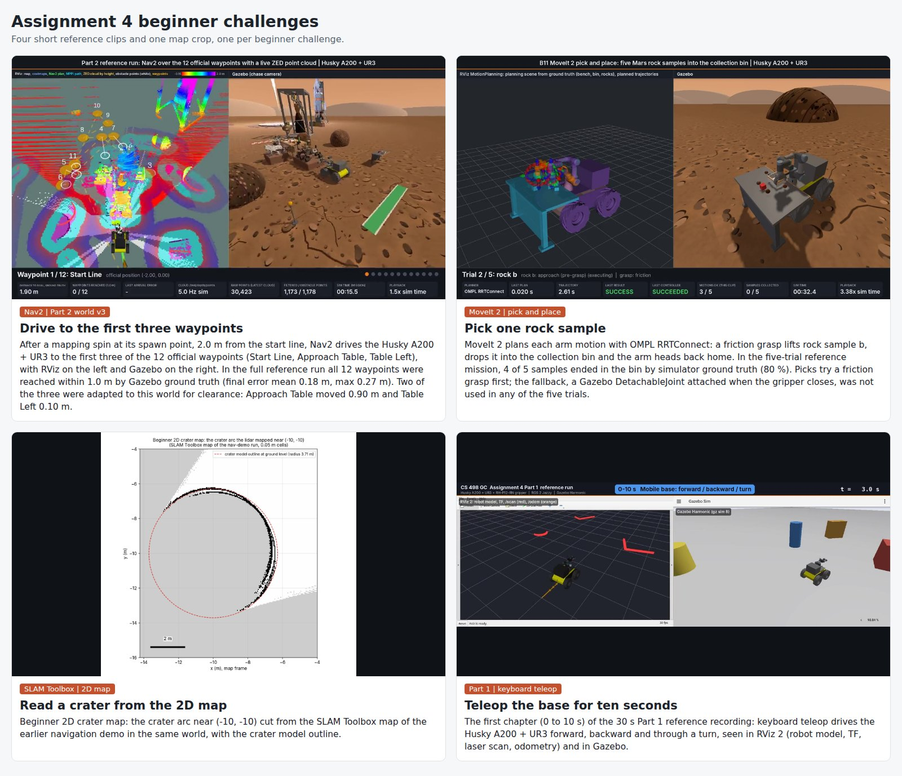
Web copy: 960 x 540, 30 fps, 31.8 s, 4.0 MB.Web copy: 960 x 540, 30 fps, 7.8 s, 0.1 MB.Web copy: 960 x 320, 30 fps, 10.0 s, 0.2 MB.
Drive to the first three waypoints: After a mapping spin at its spawn point, 2.0 m from the start line, Nav2 drives the Husky A200 + UR3 to the first three of the 12 official waypoints (Start Line, Approach Table, Table Left), with RViz on the left and Gazebo on the right. In the full reference run all 12 waypoints were reached within 1.0 m by Gazebo ground truth (final error mean 0.18 m, max 0.27 m). Two of the three were adapted to this world for clearance: Approach Table moved 0.90 m and Table Left 0.10 m. | Pick one rock sample: MoveIt 2 plans each arm motion with OMPL RRTConnect: a friction grasp lifts rock sample b, drops it into the collection bin and the arm heads back home. In the five-trial reference mission, 4 of 5 samples ended in the bin by simulator ground truth (80 %). Picks try a friction grasp first; the fallback, a Gazebo DetachableJoint attached when the gripper closes, was not used in any of the five trials. | Read a crater from the 2D map: Beginner 2D crater map: the crater arc near (-10, -10) cut from the SLAM Toolbox map of the earlier navigation demo in the same world, with the crater model outline. | Teleop the base for ten seconds: The first chapter (0 to 10 s) of the 30 s Part 1 reference recording: keyboard teleop drives the Husky A200 + UR3 forward, backward and through a turn, seen in RViz 2 (robot model, TF, laser scan, odometry) and in Gazebo.
How it was checked: Independent verifiers checked the clips, cards and numbers against their sources with their own code; a third re-verification confirmed the fixes.
B34Fallback
Challenge Yourself: advanced challenges (visual SLAM with loop closure, sorting samples by size, multi-robot, dust-storm navigation)
Points: 0 (ungraded)
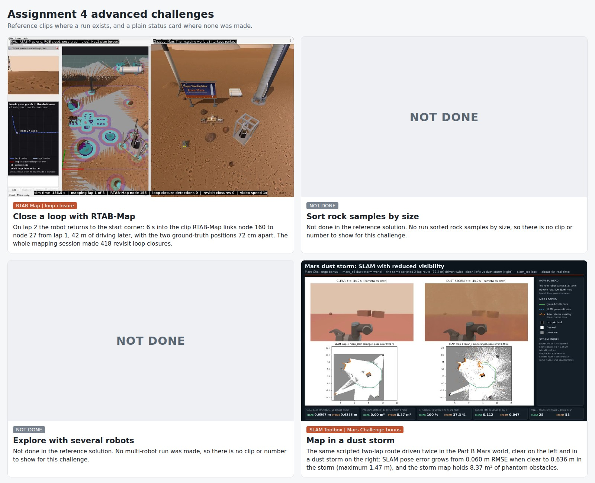
Web copy: 960 x 540, 30 fps, 16.0 s, 0.3 MB.Web copy: 960 x 540, 30 fps, 12.0 s, 0.3 MB.
Reason: Two of the four advanced challenges were done (visual SLAM with loop closure, and navigation in a dust storm); sorting samples by size and several robots were not attempted.
Close a loop with RTAB-Map: On lap 2 the robot returns to the start corner: 6 s into the clip RTAB-Map links node 160 to node 27 from lap 1, 42 m of driving later, with the two ground-truth positions 72 cm apart. The whole mapping session made 418 revisit loop closures. | Sort rock samples by size: Not done in the reference solution. No run sorted rock samples by size, so there is no clip or number to show for this challenge. | Explore with several robots: Not done in the reference solution. No multi-robot run was made, so there is no clip or number to show for this challenge. | Map in a dust storm: The same scripted two-lap route driven twice in the Part B Mars world, clear on the left and in a dust storm on the right: SLAM pose error grows from 0.060 m RMSE when clear to 0.636 m in the storm (maximum 1.47 m), and the storm map holds 8.37 m² of phantom obstacles.
How it was checked: Independent verifiers checked the clips, cards and numbers against their sources with their own code; a third re-verification confirmed the fixes.
B35Verified with notes
Part B status and policy (optional extra credit since Dec 7, 2025; deadlines; late penalty)
Points: -10% per day, maximum 3 days (v11; also v3-6 and the legacy handout); bonus capped at +35
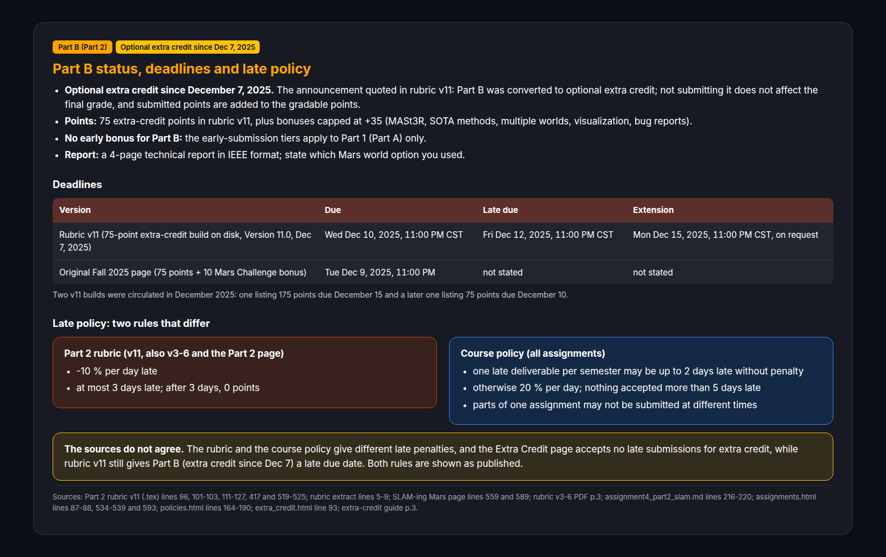
Part B status: optional extra credit since Dec 7, 2025 (rubric v11: 75 points, bonuses capped at +35, no early bonus). Due Wed Dec 10, 2025, 11:00 PM CST, late due Fri Dec 12, extension to Mon Dec 15 on request. Two published late rules differ and both are shown: the Part 2 rubric takes 10 % per day for at most 3 days, while the course policy allows one deliverable up to 2 days late without penalty, then 20 % per day, and nothing more than 5 days late.
How it was checked: An independent verifier checked every number against its cited source and the grader runs; a re-verification confirmed the fixes.
B36Verified with notes
FA26/SP27 Part B grader results card (default 75-point variant: 25.5 automated points, 49.5 manual points)
Points: 75 (25.5 automated + 49.5 manual); 175 in the v11-as-is variant (60 automated + 115 manual)
Status card: the detailed card shows commands, file paths, grader thresholds or machine details, so it stays with the course staff.
Gradescope autograder results of the Part 2 reference package, graded the way Gradescope runs it: FA26 25.5 / 25.5 and SP27 25.5 / 25.5 automated points, plus the 17 manual items (49.5 points) with the evidence for each.
How it was checked: An independent verifier recomputed the numbers and checked the package build and test logs and the media; a re-verification confirmed the fixes.
B37Verified with notes
Part 2 waypoint file (YAML, JSON or CSV with at least 10 waypoints) and the trajectory reach check
Waypoint file: the 12 official Part 2 waypoints adapted to world v3 (7 moved for clearance). The plot shows them over the trajectory the grader reads (/slam_pose in the upload-size bag, 501 poses, 52.6 m) with 1.0 m circles and the closest approach to each. The local FA26 grader gives P2-T07 0.5 / 0.5 (12 waypoints parsed, 11 distinct at least 0.5 m apart, bounding-box diagonal 10.79 m) and P2-T08 2.0 / 2.0 (11 of 11 distinct waypoints reached within 1.0 m, closest approaches 0.01 to 0.20 m); waypoint 12 (Home) repeats the Start Line position.
How it was checked: An independent verifier recomputed the numbers from the mission bag and the raw data with its own code; a re-verification confirmed the fixes.
B38Verified with notes
Decimated MUSt3R reconstruction file (PLY or PCD, coloured, at most 500k points and about 10 MB)
Binary little-endian PLY with x, y, z and red, green, blue per point.
Download: the decimated MUSt3R reconstruction of the static capture as a binary PLY with colour (179,288 points, 2.69 MB). MUSt3R's 512 model ran on the 200 RGB frames with its own camera poses; only its most confident 10.3 % of pixels are kept, placed in the simulator world by the Sim(3) of its camera path and voxel-averaged at 1.25 cm. The grader's own reader scores P2-T03 1.5 of 1.5. A world-frame audit with tests fixed before the run: reprojected into 20 true depth images that were not used to build or align it, 47.7 % of the visible points lie within 10 cm of the true depth, against at most 16.8 % for deliberately wrong poses; ground at +4.5 cm; median object offset 6.4 cm over the 5 objects with at least 100 points (largest 18.3 cm). The median distance to the modelled scene of the points away from the two turkeys, which the scene model does not include, is 3.2 cm. Coverage: the most confident pixels hold fewer than 100 points on the three boulders, so those objects are not scored.
How it was checked: An independent verifier recomputed the export, the grader's P2-T03 check and the world-frame audit with its own code; a re-verification confirmed the caption fix.
B39Verified with notes
Code-quality sub-items of the original Part 2 handout: a commit history in Git showing progress, modular design, error handling, PEP 8, and adding the TA's GitHub account to private repositories
Points: Within the original handout's 'Source Code (30)'; no separate points
Status card: a code-type deliverable (code, configuration, a script or a README), shown only as a status card because the reference solution code is never public.
Code quality of the must3r_nav package: flake8 7.1.1 over 16 Python files reports 34 findings with the package's own 120-character line limit (E702 15, E501 14, F401 3, E731 2) and 265 at a 100-character limit. The repository is local: branch submission, tag v1.0, 0 remotes, never pushed.
How it was checked: An independent verifier recomputed the numbers and checked the package build and test logs and the media; a re-verification confirmed the fixes.
From the UR3 home pose (valid in the planning scene, Jacobian condition number 14.415, below the servo threshold 17), the query 'Point at the red cube' drove the tool with moveit_servo toward a hover point 18 cm above the SAMWISE target and 8 cm toward the robot. The largest joint change was 0.3769 rad and the image distance between the projected tool and the projected hover point went from 148.5 px to 11.1 px (pre-registered pass: joint change above 0.1 rad, last value below 25 px and below half of the first); the servo ended 'converged' after 21.14 s of simulated time.
How it was checked: An independent verifier recomputed the numbers from the raw run outputs with its own code, against the tests registered before the runs, and checked the videos; a re-verification confirmed the fixes.
Points: No points stated (legacy evaluation criterion)
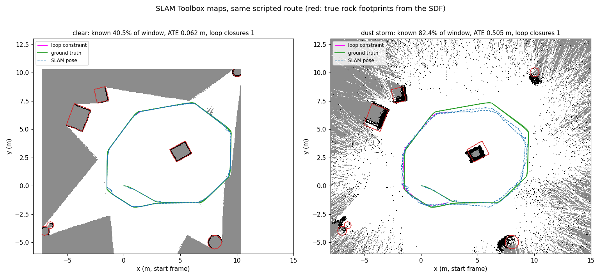
Legacy mapping-quality criterion (clear obstacle boundaries), shown on the separate dust-storm test world, not the Part 2 world: a flat Mars plane with seven rocks, a crater rim and a pillar. SLAM Toolbox maps of the same scripted 19-waypoint route, clear (left) and in a dust storm (right), with the true footprints from the world file in red; the 23 x 19 m window holds six of the rocks and the pillar. In the clear map all 761 occupied cells inside the window lie within 0.25 m of a true footprint (the farthest is 0.165 m away), so it shows no phantom obstacles, and 81 % of the footprint outlines inside the window have an occupied cell within 0.25 m. In the dust-storm map only 39 % of the occupied cells inside the window lie that close, leaving about 7.8 m^2 of phantom obstacles. The panel titles were recomputed: 40.5 % and 82.4 % of the window known, ATE 0.062 m and 0.505 m, and one loop-closure event in each run.
How it was checked: An independent verifier recomputed the numbers with its own code from the bag, the screen recording, a re-run of the autograder, the maps and the course pages; a re-verification confirmed the fixes.
Part 2 bonus
BB1 to BB14: MASt3R, the SOTA methods, multiple Mars worlds, visualization, bug reports, the Mars Challenge and meshes. 14 rows: 14 Verified with notes.
BB1Verified with notes
Bonus: MASt3R implementation
Points: +10
Web copy: 960 x 540, 30 fps, 12.0 s, 1.8 MB.
MASt3R (left) and MUSt3R (right) on the same 200 RGB frames of the Mars Thanksgiving capture, each aligned to ground truth by the Sim(3) of its own camera path; ground truth below; metrics table bottom right. Rotation error is the median, over the 200 frames, of the angle between each estimated camera orientation and the true one after the Sim(3) alignment, shown two ways: with one fixed rotation per method fitted and removed first (this absorbs a camera-axes convention difference and any constant tilt of the method), and against the known camera axes with nothing fitted: MASt3R 1.77° and MUSt3R 2.12° with the offset removed, MASt3R 4.10° and MUSt3R 2.05° against the known axes, the reverse of the order with the offset removed. MASt3R's fitted offset of 3.74° comes almost entirely from its principal point, which it estimates 29 px below the centre of the 640 x 480 frames: that alone tilts its camera axes by 3.46° to 3.66° (with its own or with the true focal length), leaving 0.16° to 0.32°. Run times exclude model loading and are not a controlled speed test: MASt3R ran in float32, MUSt3R in bfloat16, on machines of the same type.
How it was checked: An independent verifier recomputed the camera and geometry errors from the reconstructions with its own code; a re-verification confirmed the fixes.
BB2Verified with notes
Bonus: SOTA methods (Section 2)
Points: +15 (one bonus)
Video 1280 x 720, 30 fps, 20.0 s (also on the SLAM-ing Mars page).
SOTA methods bonus: the 200-frame static recording of world v3 reconstructed by VGGT-Omega, VGGT, TTT3R, MUSt3R and CUT3R, each aligned to ground truth by its own Sim(3) and scored on the same 5 m scene crop (full table in B3). The rule fixed before the results picks VGGT-Omega: F-score 0.800 at 5 cm, camera ATE 2.4 cm.
How it was checked: Independent page reviewers recomputed the numbers with their own code and checked the frames, links and media.
BB3Verified with notes
SOTA method: VGGT (3D static)
Points: Part of BB2
Video 1280 x 720, 30 fps, 20.0 s (also on the SLAM-ing Mars page).
VGGT in the same 200-frame comparison (B3): camera ATE 3.3 cm, median accuracy 7.8 cm, median completeness 1.7 cm, F-score 0.524 at 5 cm and 0.710 at 10 cm (0.32 at 5 cm on objects only); second after VGGT-Omega on both the scene crop and the objects.
How it was checked: Independent page reviewers recomputed the numbers with their own code and checked the frames, links and media.
BB4Verified with notes
SOTA method: VGGT-SLAM (3D static)
Points: Part of BB2 (eligibility not stated)
Web copy: 960 x 540, 30 fps, 14.0 s, 3.6 MB.
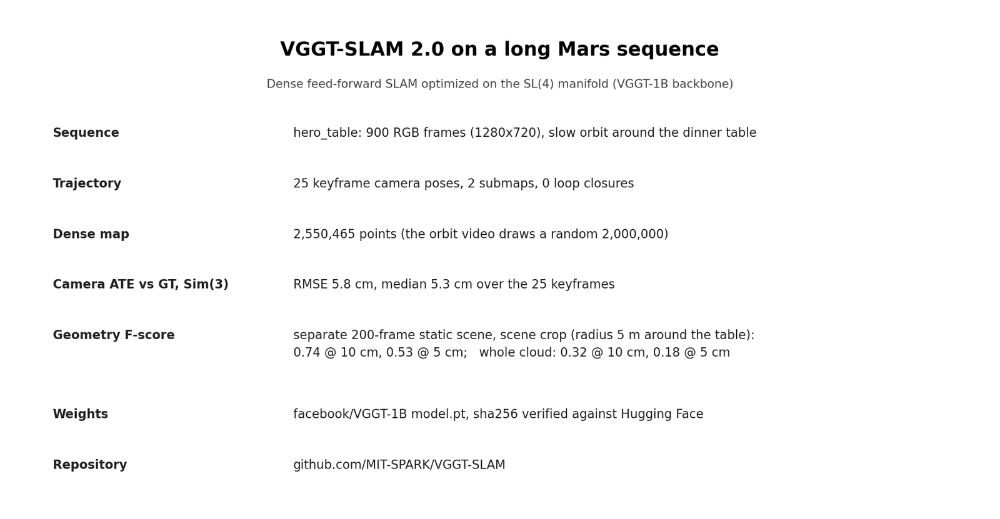
VGGT-SLAM 2.0 (SL(4) manifold, VGGT-1B backbone) on a 900-frame Mars sequence: 25 keyframe poses in 2 submaps, a 2,550,465-point dense map, and camera ATE RMSE 5.8 cm (median 5.3 cm) over the 25 keyframes vs ground truth (Sim(3) aligned). On a separate 200-frame static capture: geometry F-score 0.74 at 10 cm and 0.53 at 5 cm inside the pre-registered 5 m scene crop around the table (0.32 and 0.18 for the whole cloud). The orbit video draws a random 2,000,000-point subsample of the 2,550,465-point map. Reference: github.com/MIT-SPARK/VGGT-SLAM.
How it was checked: An independent verifier recomputed the camera error, point counts and F-scores with its own code; a re-verification confirmed the fixes.
BB5Verified with notes
SOTA method: Pi3 (3D static)
Points: Part of BB2 (eligibility not stated)
Web copy: 960 x 540, 30 fps, 12.0 s, 2.9 MB.
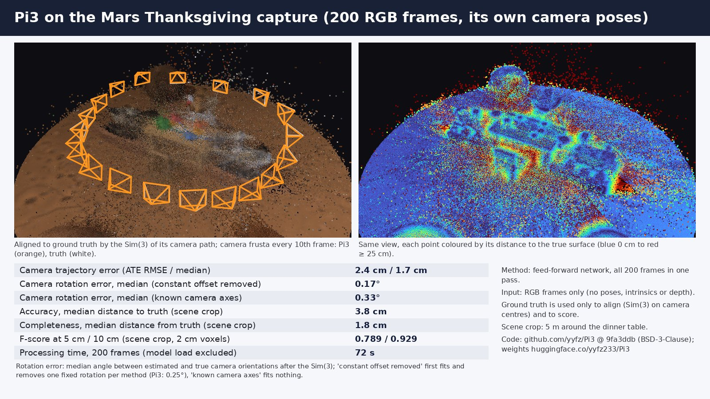
Pi3 cloud in the ground-truth world, 5 m scene crop. Global-frame check (the reprojection and world-anchor tests used for the reference reconstruction): 37 % of its visible points lie within 10 cm of the true depth against at most 20 % for deliberately wrong camera conventions; ground layer -2.5 cm, median object offset 5.0 cm. Its scattered edge points keep the reprojection margin under the factor of 2 that the test asks for (1.92 on points above the ground).
How it was checked: An independent verifier recomputed the camera and geometry errors from the reconstructions with its own code; a re-verification confirmed the fixes.
BB6Verified with notes
SOTA method: CUT3R (4D dynamic)
Points: Part of BB2
Video 1920 x 1080, 10 fps, 20.0 s (also on the SLAM-ing Mars page).
4D reconstruction of the Mars Thanksgiving world from the 200 RGB frames of one camera loop around the dinner table. Left: each input frame with the moving points CUT3R found without ground truth, coloured by the turkey each track was matched to (magenta: a track that matched no turkey). Right: the same points in 3D after aligning the reconstructed camera path to the true one (camera error 0.404 m RMSE). Solid lines are the matched tracks, dashed white lines the true body-centre paths (one lap), white rings the true body centres and the grey disc, when in view, the true camera position of the current frame. CUT3R is picked by the pre-registered rule. No model reached 50 % coverage of both turkeys, so the rule takes the highest mean coverage. CUT3R's matches cover 42.4 % of the visible frames of each turkey, and it wins only because the rule's 1.0 m gates count the empty chair as the running turkey: all 76 of its running-turkey matches lie mostly on the empty chair, not on the turkey. With 0.5 m or 0.6 m gates the same rule would pick VGGT-Omega (checked after the fact, not used for the pick). Its flying-turkey track is not evidence of motion either: in the static twin recording, where both turkeys are parked, CUT3R still keeps a 68-frame track on the parked flying turkey. In this recording its flying-turkey matches lie mostly on the turkey in 37.5 % of the visible frames (post-hoc label check); in 16 of its 85 flying-turkey matches the points come mostly from a rocket model in the background of the image, which CUT3R places next to the turkey's path. Uni4D is not part of this comparison.
How it was checked: Independent page reviewers recomputed the numbers with their own code and checked the frames, links and media.
BB7Verified with notes
SOTA method: UNI4D (4D dynamic)
Points: Part of BB2
Web copy: 960 x 540, 10 fps, 20.0 s, 2.3 MB.
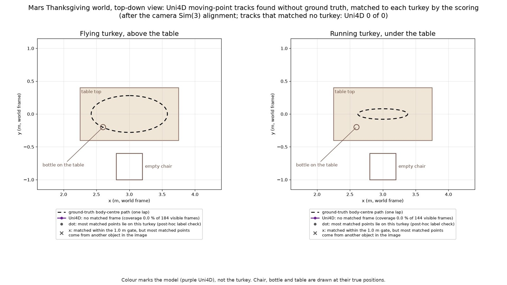
Same scene, 200 frames and layout as the CUT3R video. Uni4D (CVPR 2025) was run afterwards and scored with the same frozen protocol. It was given the true camera intrinsics, UniDepth depth maps computed with the same intrinsics, CoTracker3 point tracks and a moving-object mask from the moving points that the protocol's own static/dynamic test found in VGGT-Omega's reconstruction (no ground-truth labels). Uni4D tracks neither turkey. The track filter, chosen beforehand on the static twin recording (tracks of at least 60 of the 200 frames, clusters of at least 80 points), keeps no Uni4D track in this recording: coverage is 0 % of the 184 visible frames of the flying turkey and 0 % of the 144 visible frames of the running turkey, and the left panel shows no moving points. On the static twin recording, where both turkeys are parked, the same filter keeps no track either; it was chosen there as the least strict setting that keeps none. Uni4D's camera path is also far from the true one: 1.461 m RMSE after a similarity alignment, against 0.404 m for CUT3R, 0.080 m for TTT3R and 0.025 m for VGGT-Omega. In the 3D view its aligned path (yellow) cuts across the middle of the scene instead of circling the table like the true camera path (grey dashes). Adding Uni4D does not change the pre-registered pick, which stays CUT3R. Implementation notes: CoTracker3's correlation step was evaluated in 8-frame chunks to reduce memory use (identical tracks, visibility and confidence in a 48-frame check), and Uni4D ran its published configuration with the determinism switch off.
How it was checked: An independent verifier recomputed the scores under the frozen protocol with its own code; a re-verification confirmed the fixes.
BB8Verified with notes
SOTA method: TTT3R (4D dynamic)
Points: Part of BB2
Video 1920 x 1080, 10 fps, 20.0 s (also on the SLAM-ing Mars page).
Same scene, inputs and layout as the CUT3R video. TTT3R recovers the camera path well (0.080 m RMSE) but tracks neither turkey: its coverage is 0 % for both. The track filter frozen on the static twin recording keeps one track, 43 frames long, and it is a false track on a rock seat (shown in magenta), not on either turkey.
How it was checked: Independent page reviewers recomputed the numbers with their own code and checked the frames, links and media.
BB9Verified with notes
Bonus: multiple Mars worlds (2 or more options)
Points: +5
Web copy: 1280 x 720, 30 fps, 117.1 s, 4.9 MB.
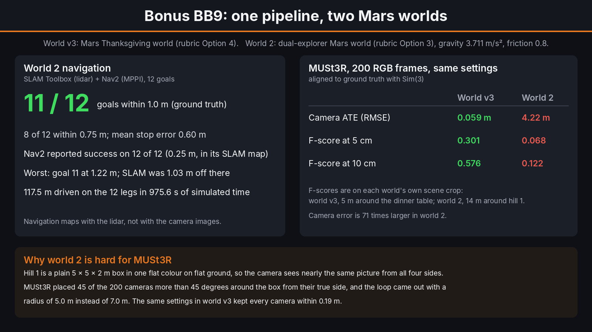
World 2 (rubric Option 3), Nav2 waypoint mission. Left: RViz with the SLAM Toolbox map, laser scan, Nav2 plan, driven trail and the 12 goals laid out around this world's hills, rocks and crater. Right: Gazebo chase camera. The HUD reads Gazebo ground truth. Nav2 (MPPI controller) reported success on 12 of 12 goals, with its 0.25 m tolerance measured in its own SLAM map. By ground truth 8 stops were within 0.75 m (green dots) and 11 of 12 within 1.0 m; the 4 red dots (goals 8 to 11) stopped 0.86 to 1.22 m away, where the SLAM map had drifted up to 1.03 m from the truth. The 12 legs covered 117.5 m in 975.6 s of simulated time; the mission clock on screen also counts a 13.2 s calibration spin (one full turn in place) before goal 1, so it reads 16:29 when the mission completes (the clip runs on for 0.7 s, to 16:34). The clip plays the mission at 8.5x simulated time (117 s).
How it was checked: An independent verifier recomputed the mission and reconstruction numbers with its own code; a re-verification confirmed the fixes.
BB10Verified with notes
Bonus: exceptional visualization or novel navigation
Points: v11: +5; v3-6: +5 (its only bonus)
Video 1280 x 720, 30 fps, 86.0 s (also on the SLAM-ing Mars page).
Left: RViz with the live SLAM Toolbox map, the laser scan (red), the A* path (bright green), the trail the robot has driven (cyan) and the numbered waypoints (amber: pending, orange: current, green: reached). Right: the Gazebo Sim GUI with a chase camera. Bottom: a HUD with the current waypoint, the distance to the goal, the speeds and the ground-truth arrival error, drawn from telemetry logged at 20 Hz during the run. Video 86.0 s at 2.5x simulation time. A Clearpath Husky A200 with a UR3 arm runs the Part B stack: EKF fusion of wheel odometry and IMU, SLAM Toolbox (online async), and the course's custom A* global planner with a DWA local planner (0.85 m inflation). After a mapping spin in place (ground truth turned 6.98 rad, 400°), it drives 11 waypoints past the engine exhibit, the cargo crates, the landing pad, the upper stage, the tank farm, the booster and under the welcome sign, then turns to face the dinner table (heading error 0.002 rad) and the UR3 waves. All 11 waypoints were reached: when the planner reported arrival, the Gazebo ground-truth position was 0.307 m from the goal on average (max 0.354 m, min 0.236 m; the planner stops within 0.35 m on its SLAM pose, and within 0.75 m counts as reached). The robot drove 68.5 m (ground truth) in 212.9 s of simulation time, mapping spin included. Waypoint 11 sits 0.5 m west of its spot in the world's waypoint file, because that spot lies exactly at the planner's 0.85 m inflation radius and has no path. Both turkeys keep moving during the run (their driver updates both poses 50 times per simulated second); at this video scale only the flying turkey is easy to see. Web video 1280 x 720, 30 fps.
How it was checked: Independent page reviewers recomputed the numbers with their own code and checked the frames, links and media.
BB11Verified with notes
Bonus: bug reports
Points: +1 to +3
Status card: this recording or log shows terminal commands, which this page does not publish.
Reference bug-and-fix log for the Part B bug-report bonus: 18 entries, each with the affected material, the measured symptom and its source, and a fix; 11 in the course materials, 4 in the graders and reference package, 2 recording pitfalls and 1 issue of the TA's own environment, kept apart. Sources are cited by line range; no student work was used.
How it was checked: An independent verifier checked every number against its cited source and the grader runs; a re-verification confirmed the fixes.
BB12Verified with notes
Bonus: Mars environment / Mars Challenge (includes the optional race track)
Points: One shared +10 Mars Challenge bonus (Fall 2025 original, superseded by v11), not additive with BB13
Video 1280 x 720, 30 fps, 41.4 s (also on the SLAM-ing Mars page).
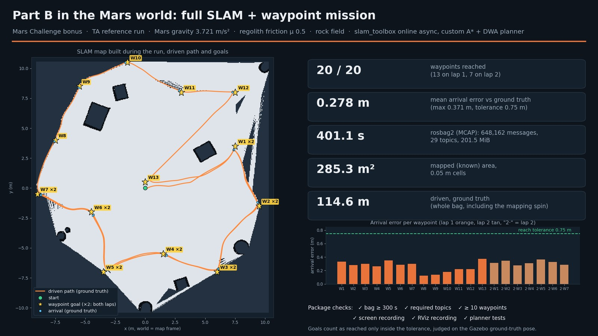
A timed lap of an 8-gate course around the Thanksgiving table, in a race copy of the earlier Mars Thanksgiving world (Mars gravity 3.711 m/s², ground friction 0.8, dust particles off). The Husky + UR3 steers on its SLAM Toolbox pose. Lap time 27.00 s of simulated time; 8 of 8 gates passed inside their radius on ground truth; 0 contacts; minimum footprint clearance 0.374 m; 12.05 m driven at 0.447 m/s on average. The speed command is capped at 0.6 m/s; the ground-truth speed briefly reaches 0.676 m/s. The SLAM pose stays within 0.10 m RMSE of ground truth, while wheel odometry drifts to 3.95 m RMSE. The timer and splits count simulated seconds; the simulation ran slightly slower than real time, so the 27.00 s lap takes about 30 s of video. On the published gate positions the middle gates run through two chairs, and the same steering law got stuck on the table after 3 of 8 gates. This lap uses adapted gates moved south of the table, with the same start, finish, number of gates and radii. Web video 41.4 s, 1280 x 720, 30 fps.
How it was checked: An adversarial verifier recomputed the lap and storm metrics and checked the videos.
BB13Verified with notes
Bonus: Mars dust storm (SLAM with reduced visibility)
Points: Same +10 as BB12 (dust-storm variant of the Mars Challenge bonus), not additive
Video 1280 x 720, 24 fps, 37.0 s (also on the SLAM-ing Mars page).
The same scripted two-lap route around a rock (69.2 m) driven twice in the Part B Mars world: clear on the left, dust storm on the right. Top row: the robot camera as seen; bottom row: the live SLAM Toolbox map with the ground-truth path (green), the SLAM pose estimate (blue, dashed) and the lidar returns that SLAM used (orange). Video 37.0 s, about 4x simulation time. SLAM pose error grows from 0.060 m RMSE when clear to 0.636 m in the storm (maximum 1.47 m). The storm map holds 8.37 m² of phantom obstacles (occupied cells more than 0.25 m from any rock); only 37.3 % of its occupied cells lie within 0.25 m of a real rock (100 % when clear), and SLAM makes 58 map-to-odom corrections larger than 10 cm or 2°, against 28 when clear. The camera's RMS contrast drops from 0.112 to 0.047. Storm model: Gazebo particle emitters upwind; lidar extinction of 0.06 per metre in both directions (visibility 65 m), dust backscatter returns and range noise; camera haze computed from the depth image, plus sensor noise. Gazebo Harmonic does not render the world's fog, so the visible haze comes from this camera model. The route is driven on the simulator's ground-truth pose, so SLAM only estimates the pose and never steers; one storm strength and one random seed. Web video 1280 x 720, 24 fps.
How it was checked: An adversarial verifier recomputed the lap and storm metrics and checked the videos.
BB14Verified with notes
SOTA 3D static methods: meshes (v11 groups VGGT, VGGT-SLAM and Pi3 under 'Point Clouds + Meshes + Camera Poses')
Points: Within the SOTA bonus (+15)
Web copy: 960 x 540, 30 fps, 20.0 s, 1.4 MB.
BB14, meshes of the table scene. Left: the TSDF mesh of VGGT-Omega, the best 3D method by the pre-registered F-score rule, fused from its own predicted depth and cameras (200 RGB frames, no depth or poses given to the model) and placed in the ground-truth frame by one Sim(3) fitted on camera centres. Right: the ground-truth TSDF mesh from the simulator's depth images and exact camera poses at the same 200 viewpoints. Both use the same TSDF settings: 1 cm voxels, 5 cm truncation, scene crop of radius 5 m about the table. Accuracy (share of the VGGT-Omega surface within 5 cm and within 10 cm of the ground truth): 0.891 and 0.948. Completeness (share of the ground-truth surface within 5 cm and within 10 cm of VGGT-Omega): 0.941 and 0.971. F-score at 5 cm 0.915, Chamfer distance 2.6 cm (mean of both directions), measured on 2,000,000 area-uniform surface samples per mesh. The video comes from a z-buffer rasterizer written for this page and casts no shadows: a black area is a place where that mesh has no surface, for example ground that no camera saw, which is missing from both meshes. Median accuracy distance 1.7 cm (VGGT-Omega surface to ground truth), median completeness distance 1.5 cm (ground truth to VGGT-Omega), F-score at 10 cm 0.959. Point-cloud F-score at 5 cm reported earlier for the same crop: 0.800, not directly comparable (2 cm voxel clouds instead of meshes, and a ground-truth cloud back-projected with principal point (320, 240) instead of (319.5, 239.5)). The Sim(3) uses ground-truth camera centres and serves evaluation only; VGGT-Omega never saw depth or poses. Ground-truth depth is back-projected with the pixel-centre principal point (319.5, 239.5). Both meshes come from a GPU TSDF written for this page and meshed with scikit-image marching cubes, and the video comes from a rasterizer written for this page. The 200 input frames were rendered with copies of the rover models in which the logos, flags and mission names were painted over.
How it was checked: Independent verifiers recomputed the mesh metrics with their own code and checked the video.
Extra credit option A: RTAB-Map
ECA0 to ECA25: RTAB-Map 3D SLAM, from installation to multi-session mapping. 26 rows: 26 Verified with notes.
Extra credit option A, reference submission. A 30 s cut of the mapping session played at 2x real time (the simulator ran slower than real time, so the sim clock on the status bar gains about 1.5 s per second of video): RViz on the left (RTAB-Map grid, RGB cloud, pose graph and Nav2 costmap; the Nav2 plan appears later, in the goal phase) and Gazebo on the right. At 10 s the banner marks the first revisit loop closure: node 160 on lap 2 matched node 27 on lap 1, 42 m of driving later. The FA26 autograder gives the submission 26.5 of 26.5 automated points. It credits the 32 loop closures it can confirm in the 175 s bag (the CSV lists 418 for the whole session) and flags that difference for TA review; the check needs 3. The other 23.5 points and the +5 multi-session bonus are graded by the TA.
How it was checked: An independent verifier recomputed the numbers and checked the report and the autograder run; a third re-verification confirmed the AI-use fix.
Status card: the evidence for this row is shown in the cards it links to.
RTAB-Map 0.23 runs in the reference submission (the v3 Mars Thanksgiving session, 483 graph nodes, ECA9). The FA26 autograder's check that RTAB-Map ran gives 2 of 2, within 26.5 of 26.5 automated points (ECA0).
How it was checked: Checked by the FA26 RTAB-Map autograder's automated tests; the numbers shown come from the independently verified session cards it links to.
ECA2Verified with notes
A: launch file works
Points: 2 (EA-T02 automated 0.5 + EA-M1.2 manual 1.5); part of 'Installation & Setup 5'
Status card: a code-type deliverable (code, configuration, a script or a README), shown only as a status card because the reference solution code is never public.
The submission's launch file brings up RTAB-Map with the robot's RGB-D camera and laser; the FA26 autograder's launch-file check gives 0.5 of 0.5, within 26.5 of 26.5 automated points (ECA0).
How it was checked: Checked by the FA26 RTAB-Map autograder's automated tests; the numbers shown come from the independently verified session cards it links to.
ECA3Verified with notes
A: parameters configured
Points: 1 (EA-T03 0.5 + EA-M1.3 0.5); part of 'Installation & Setup 5'
Status card: a code-type deliverable (code, configuration, a script or a README), shown only as a status card because the reference solution code is never public.
RTAB-Map's parameters come from the submission's parameter file; the FA26 autograder's parameter-file check gives 0.5 of 0.5, within 26.5 of 26.5 automated points (ECA0).
How it was checked: Checked by the FA26 RTAB-Map autograder's automated tests; the numbers shown come from the independently verified session cards it links to.
Status card: the evidence for this row is shown in the cards it links to.
The RGB and depth camera topics are remapped to RTAB-Map and recorded (/camera/color/image_raw, /camera/aligned_depth_to_color/image_raw and /camera/color/camera_info, ECA20). The FA26 autograder gives the camera remapping check 1 of 1 and the camera topics check 1 of 1 (ECA0).
How it was checked: Checked by the FA26 RTAB-Map autograder's automated tests; the numbers shown come from the independently verified session cards it links to.
ECA5Verified with notes
A: odometry estimation
Points: 4 (EA-T06 2 + EA-M2.2 2); part of 'Basic RGB-D SLAM 15'
Status card: the evidence for this row is shown in the cards it links to.
Odometry is the wheel odometry; against Gazebo ground truth its path has an ATE RMSE of 1.085 m before optimization, and RTAB-Map's optimized graph brings it to 0.151 m (ECA9). The FA26 autograder's odometry and session-length check gives 2 of 2 (ECA0).
How it was checked: Checked by the FA26 RTAB-Map autograder's automated tests; the numbers shown come from the independently verified session cards it links to.
ECA6Verified with notes
A: map generation (/map and a 2D map image with its metadata file)
Points: 4 (EA-T07 2 + EA-M2.3 2); part of 'Basic RGB-D SLAM 15'
Status card: the evidence for this row is shown in the cards it links to.
RTAB-Map publishes its 2-D occupancy grid on /map, and the submission exports it as an image with its metadata file; the grid before and after loop closure is compared in ECA10. The FA26 autograder's map generation check gives 2 of 2 (ECA0).
How it was checked: Checked by the FA26 RTAB-Map autograder's automated tests; the numbers shown come from the independently verified session cards it links to.
ECA7Verified with notes
A: TF tree configured
Points: 4 (EA-T08 2 + EA-M2.4 2); part of 'Basic RGB-D SLAM 15'
Status card: a code-type deliverable (code, configuration, a script or a README), shown only as a status card because the reference solution code is never public.
TF tree read from the session bag (/tf and /tf_static, 422 s of simulated time): map to odom (published by RTAB-Map, 30.4 Hz) to base_link (wheel odometry, 50.0 Hz), then the static frames of the Husky, the UR3 arm and the sensors (43 frames in all). The frames RTAB-Map uses are base_footprint, the RGB-D camera, the laser and the IMU. The FA26 autograder's TF tree check gives 2 of 2 (ECA0).
How it was checked: An independent verifier recomputed the numbers from the RTAB-Map database and the bag with its own code; a re-verification confirmed the fixes.
ECA8Verified with notes
A: at least 3 loop closures detected (loop-closure table and demo video)
The loop-closure table lists 418 revisit loop closures: accepted RTAB-Map loop links between two nodes of the optimized graph that are at least 10 m apart along the driven path (275 global loop closures found by appearance matching, 143 local space closures found by proximity). The database stores 517 loop links in all; a second table lists every one, with a column for membership of the optimized graph and a column for revisits. The other 99 each touch one of the 100 node records that are not part of the optimized graph; they were made while the robot stood still (before the first lap, while it waited for Nav2 after the laps, between the two Nav2 goals, and after the last goal, at most 0.01 m driven between the two nodes), so none of them is a revisit. The first revisit closure came at simulated time 160.1 s: node 160 on lap 2 matched node 27 from lap 1, 42 m of driving later, with the two ground-truth positions 72 cm apart. The loop-closure demo video shows that moment at the speed it was recorded: 6 s into the clip the yellow banner, the revisit counter and an inset drawn from the session database (odometry poses of laps 1 and 2 near the start corner, over the RViz Displays list) show the link from node 160 to node 27 in red, then each next link as its newer node is stamped (10 by the end of the clip).
How it was checked: An independent verifier recomputed the numbers from the RTAB-Map database and the bag with its own code; a re-verification confirmed the fixes.
ECA9Verified with notes
A: graph optimization triggered
Points: 3 (EA-T10 1 + EA-M3.2 2)
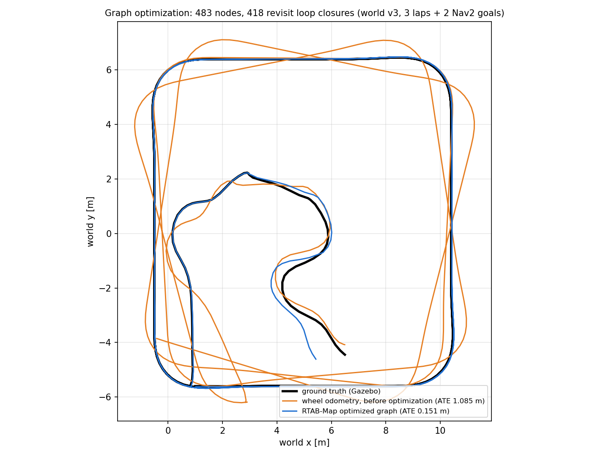
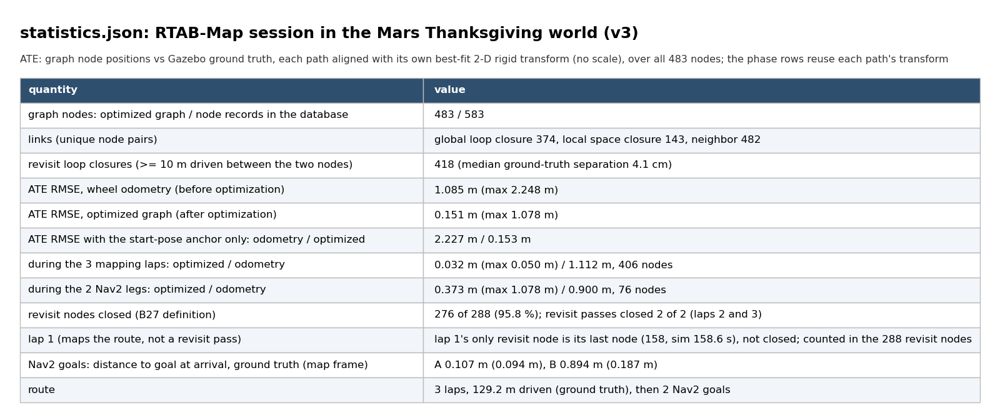
Graph optimization: the robot path before optimization (wheel odometry, orange) and after (RTAB-Map's optimized pose graph, blue) over Gazebo ground truth (black), each path aligned to ground truth with its own best-fit 2-D rigid transform (no scale). ATE RMSE 1.085 m before and 0.151 m after, over 483 graph nodes. During the 3 mapping laps (129.2 m) the optimized graph stays within 0.050 m of ground truth (RMSE 0.032 m); during the two Nav2 legs, which cross the middle of the loop away from the lap route, it drifts up to 1.078 m (RMSE 0.373 m). Nav2 reported goal B reached 0.187 m from the goal in the map while the robot was 0.894 m from it in ground truth (goal A: 0.094 m and 0.107 m). 276 of 288 revisit nodes carry a revisit loop link, and both revisit passes (laps 2 and 3) closed. The session statistics table holds these numbers and the link counts.
How it was checked: An independent verifier recomputed the numbers from the RTAB-Map database and the bag with its own code; a re-verification confirmed the fixes.
ECA10Verified with notes
A: map consistency after closure
Points: 2 (EA-M3.3 manual 2)
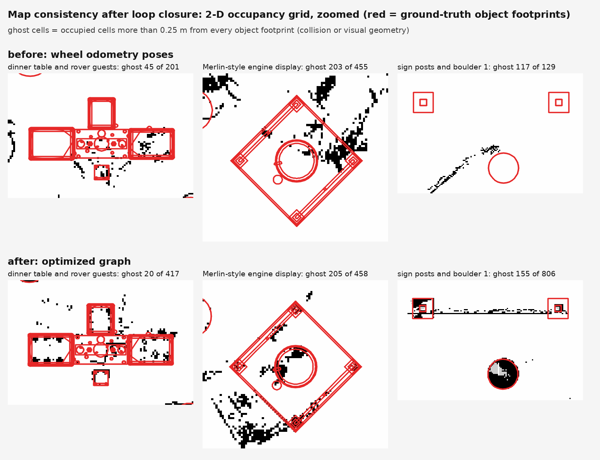
Map consistency after loop closure: the same 2-D occupancy grid rebuilt from the database with wheel-odometry poses (top) and with the optimized graph (bottom), zoomed on the dinner table, the engine display and the sign. Red outlines are the object footprints from the world file. Occupied cells more than 0.25 m from every footprint: table 45 of 201 before, 20 of 417 after; sign 117 of 129 before (the drifted sign line lies across open ground), 155 of 806 after; engine display 203 of 455 before, 205 of 458 after. That crop does not improve: its remaining cells sit between the display and the south leg of the route, where no object is modelled.
How it was checked: An independent verifier recomputed the numbers from the RTAB-Map database and the bag with its own code; a re-verification confirmed the fixes.
The exported RTAB-Map cloud (map frame) shown in the Gazebo world frame: 855,771 points (3 cm voxels) exported from the database with the optimized poses. The fitted transform from the map frame to the world frame is a yaw of +0.08 degrees and a shift of (0.994, -5.615, 0.037) m: the trajectory best fit, refined by ICP against the ground-truth depth cloud of the static_S capture around the dinner table (4.5 cm, -0.04 degrees; Sim(3) scale check 0.9999). Where the ground truth covers the scene (653,262 of the 855,771 points), 92.3 % of the points and 71.4 % of the above-ground points lie within 0.10 m of the ground-truth surface; over all points, including the parts the ground-truth capture does not see, the shares are 75.4 % and 57.6 %. Cyan: object outlines from the world file. The submission also holds the same cloud already in the world frame (855,771 points) and a lighter 5 cm export (231,950 points).
How it was checked: An independent verifier recomputed the numbers from the RTAB-Map database and the bag with its own code; a re-verification confirmed the fixes.
ECA12Verified with notes
A: octomap created
Points: 3 (EA-T12 1.5 + EA-M4.2 1.5)
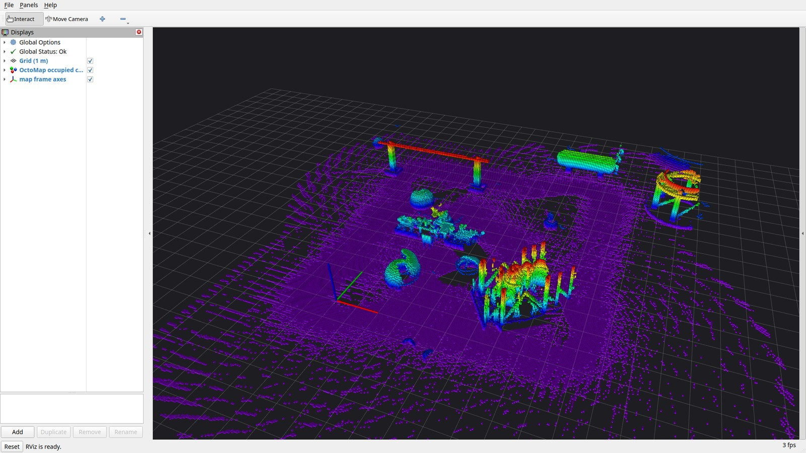
3-D OctoMap of the session. The session built 2-D local grids, so a copy of the database was reprocessed with 3-D grids and exported as an OctoMap file (ColorOcTree, 0.05 m cells): 768,022 octree nodes, 97,042 occupied leaves, 12.2 cubic metres occupied. octomap_server loaded the file back and RViz drew its occupied cells, coloured by height. The reprocessed graph agrees with the session graph within 1.8 cm on the mapping laps (up to 0.58 m on the Nav2 legs). The flat OctoMap that octomap_server published during the session holds 1,530 occupied leaves (the octomap topic in the bags).
How it was checked: An independent verifier recomputed the numbers from the RTAB-Map database and the bag with its own code; a re-verification confirmed the fixes.
ECA13Verified with notes
A: maps exported in standard formats
Points: 3 (EA-T13 automated 3)
Status card: the evidence for this row is shown in the cards it links to.
The maps are exported in standard formats: the 2-D grid as an image with its metadata (ECA6), the 3-D cloud as PLY (ECA11) and the OctoMap (ECA12). The FA26 autograder's export check gives 3 of 3, and its 3D cloud check gives 2 of 2 (ECA0).
How it was checked: Checked by the FA26 RTAB-Map autograder's automated tests; the numbers shown come from the independently verified session cards it links to.
Status card: the evidence for this row is shown in the cards it links to.
Nav2 runs on the RTAB-Map map: in the v3 session it reported goal A reached 0.094 m from the goal in the map (0.107 m in ground truth) and goal B 0.187 m in the map (0.894 m in ground truth), and the localization run in ECA16 drives around a crate that is not in the map. The FA26 autograder's check that the map is Nav2 compatible gives 1.5 of 1.5 (ECA0).
How it was checked: Checked by the FA26 RTAB-Map autograder's automated tests; the numbers shown come from the independently verified session cards it links to.
ECA15Verified with notes
A: path planning on the RTAB-Map map
Points: 2 (EA-T15 0.5 + EA-M5.2 1.5)
Status card: the evidence for this row is shown in the cards it links to.
Nav2 plans on the RTAB-Map map; its plans are recorded (/plan in the budget bag, 27 messages, ECA20), and the global plan bends around the crate in the localization run (ECA16). The FA26 autograder's planned-path check gives 0.5 of 0.5 (ECA0).
How it was checked: Checked by the FA26 RTAB-Map autograder's automated tests; the numbers shown come from the independently verified session cards it links to.
ECA16Verified with notes
A: obstacle avoidance
Points: 1 (EA-M5.3 manual 1)
Web copy: 960 x 540, 30 fps, 61.8 s, 1.0 MB.
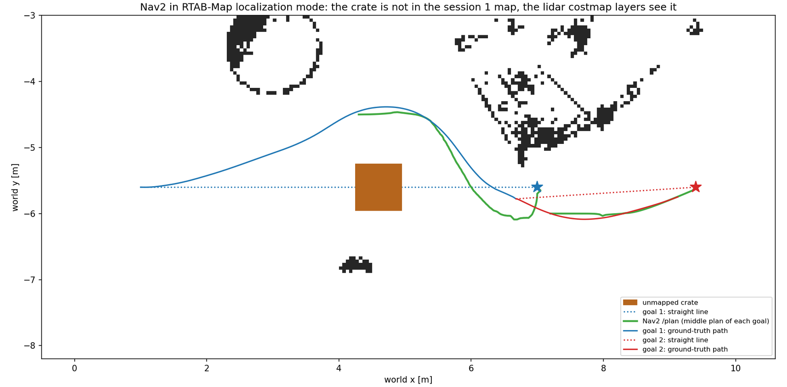
Still from the clip, while the robot passes the crate. RTAB-Map Option A, Nav2 in localization mode (reference run in Gazebo). RTAB-Map loads a copy of the session 1 database of the Mars Thanksgiving world v3 in localization mode, so the map is never extended. After the robot has localized, a 0.7 m crate that is not in the map is placed at (4.6, -5.6), on the straight line to goal 1. Nav2 (NavFn planner, MPPI controller) sees the crate only through the lidar obstacle layers of its costmaps, so the global plan bends around it. Goal 2 continues east along the session 1 route. goal 1 (7.0, -5.6): Nav2 SUCCEEDED, 0.37 m from the goal in ground truth; goal 2 (9.4, -5.6): Nav2 SUCCEEDED, 0.29 m from the goal in ground truth. A goal counts only if the robot stops within 0.50 m of it in ground truth (Nav2 goal tolerance 0.3 m plus 0.2 m for the localization error). Closest approach, robot body to crate in ground truth: 0.33 m. Median plan offset from the straight line at the crate: goal 1 1.15 m. Left: RViz (session 1 grid, Nav2 global and local costmaps, plan in green, lidar in red). Right: Gazebo. Goals are given in world coordinates and converted to the map frame with the session 1 anchor.
How it was checked: An independent verifier recomputed the numbers from the RTAB-Map databases and logs with its own code; a re-verification confirmed the fixes.
ECA17Verified with notes
A: README with setup
Points: 1 (EA-T16 0.5 + EA-M6.1 0.5)
Status card: a code-type deliverable (code, configuration, a script or a README), shown only as a status card because the reference solution code is never public.
README of the reference submission: what each file holds, the ROS 2 Jazzy dependencies (rtabmap_ros, octomap_server, navigation2, topic_tools and ros_gz), how to build and test with colcon, how the session was launched, relayed, throttled, recorded and exported, the topic and frame names that differ from the handout, key numbers, and the course AI-use statement. The FA26 autograder's README check gives 0.5 of 0.5 (ECA0).
How it was checked: An independent verifier recomputed the numbers and checked the report and the autograder run; a third re-verification confirmed the AI-use fix.
Status card: the report quotes commands or file names of the code, so it is not linked.
Three-page technical report: setup and parameters; loop closure and graph optimization (418 revisit closures; trajectory RMSE 1.085 m for wheel odometry, 0.151 m for the optimized graph, 0.032 m on the three mapping laps); 3-D reconstruction (231,950-point cloud, OctoMap with 97,042 occupied 5 cm leaves); Nav2 on the RTAB-Map map (four goals succeeded; goal B is 0.894 m from its target in ground truth because no loop closure happened on that leg to correct the drift); multi-session mapping (2 sessions, 108 inter-session links, +86.5 m2 of map); the indoor office scenario (0.053 m RMSE); and an AI use section with the course AI-use statement.
How it was checked: An independent verifier recomputed the numbers and checked the report and the autograder run; a third re-verification confirmed the AI-use fix.
ECA19Verified with notes
A: mapping demo and loop-closure demo videos
Points: 2 (EA-T18 1 + EA-M6.3 1)
Web copy: 960 x 540, 10 fps, 289.0 s, 3.8 MB.Web copy: 960 x 540, 30 fps, 16.0 s, 0.3 MB.
The mapping demo video (289.0 s) is the screen recording of the whole session with RViz on the left (RTAB-Map 2-D grid, RGB cloud, pose graph as a blue line, Nav2 global plan in green; most loop links join nodes a few centimetres apart, median 4 cm in ground truth, so after optimization they do not show at this zoom, see the B27 pose-graph figure) and the Gazebo GUI on the right: 3 laps around the dinner table, the engine display and the sign, then 2 Nav2 goals (2 reported reached). It plays at 2 times the speed it was recorded at, except 25.8 s of recording right after the laps in which every pane stood still while Nav2 started, which play at 12 times (bar: 'waiting for Nav2 (sped up)'). The bar shows simulated time, phase, RTAB-Map node, loop closure detections, revisit closures and the video speed. The first 2.5 s of the recording, before the first lap, are not shown. The two turkeys stay parked (their driver is off), so the scene is static while it is mapped. The Gazebo GUI redrew about 1.2 to 1.4 times per second of recording, so the robot moves in steps on the right. The loop-closure demo video (16 s, played at the speed it was recorded) shows the first revisit closure 6 s into the clip, with an inset drawn from the session database (odometry poses) in which each loop link appears in red when it is made.
How it was checked: An independent verifier recomputed the numbers from the RTAB-Map database and the bag with its own code; a re-verification confirmed the fixes.
ECA20Verified with notes
A: 3-minute RTAB-Map rosbag
Points: Evidence for the automated tests
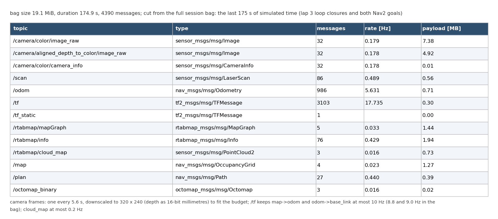
Budget bag (rosbag2, MCAP): the last 175 s of the session cut from the full bag (174.9 s span, 4,390 messages, 19.1 MiB on disk) with the handout topics /camera/color/image_raw, /camera/aligned_depth_to_color/image_raw, /camera/color/camera_info, /scan, /odom, /tf, /tf_static, /rtabmap/mapGraph, /rtabmap/info, /rtabmap/cloud_map (3 messages, at most 0.2 Hz) and /map, plus /plan (27 messages) and /octomap_binary (3). To stay under 25 MB the camera frames are kept one every 5.6 s at 320 x 240 and /tf keeps map->odom and odom->base_link at most 10 Hz (8.8 and 9.0 Hz in the bag); the full session bag is unchanged.
How it was checked: An independent verifier recomputed the numbers from the RTAB-Map database and the bag with its own code; a re-verification confirmed the fixes.
ECA21Verified with notes
A: code package (controller and loop-closure monitor nodes)
Points: No separate points
Status card: a code-type deliverable (code, configuration, a script or a README), shown only as a status card because the reference solution code is never public.
The RTAB-Map code package of the reference submission: husky_ur3_rtabmap, an ament_python package for ROS 2 Jazzy, with the launch file and parameters of the course's RTAB-Map runs, a controller node (a statistics line every 5 s, plus pause, resume, reset and mapping or localization mode as services) and a loop-closure monitor node. colcon build OK, 5 of 5 unit tests passed. Smoke test on a replay of a recorded mapping session (75 s at 3x speed): 18 statistics lines while the graph grew from 85 to 235 nodes, the loop closures from 3 to 64 (63 global, 1 proximity) and the known 2-D map area from 311.8 to 332.3 m2. Against a running RTAB-Map node the controller's pause, resume and mode-switch calls succeeded; reset is refused by default.
How it was checked: An independent verifier recomputed the numbers from the RTAB-Map databases and logs with its own code; a re-verification confirmed the fixes.
ECA22Verified with notes
A: trajectory results file
Points: 0 (required, never graded)
Status card: the evidence for this row is shown in the cards it links to.
The trajectory file is part of the reference submission (required, never graded); the trajectories before and after optimization are plotted against ground truth in ECA9.
How it was checked: Checked by the FA26 RTAB-Map autograder's automated tests; the numbers shown come from the independently verified session cards it links to.
ECA23Verified with notes
A: Scenario 1, indoor mapping (required)
Points: Within the rubric rows
Web copy: 960 x 540, 15 fps, 168.9 s, 1.9 MB.
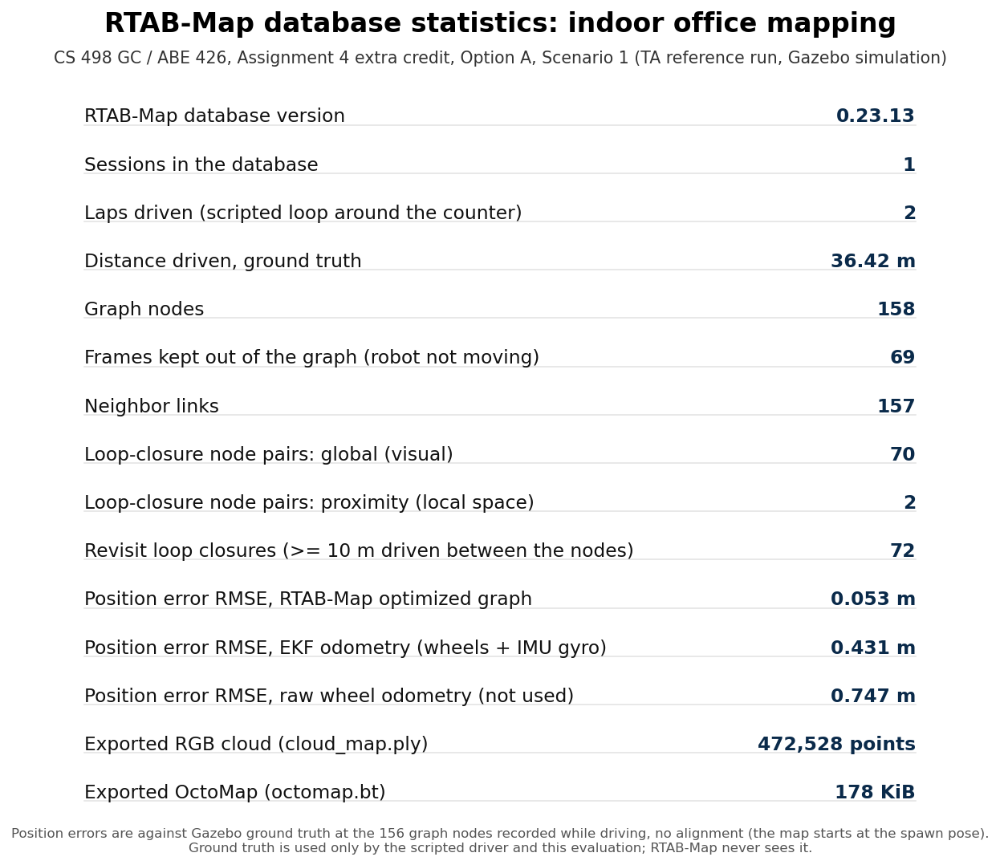
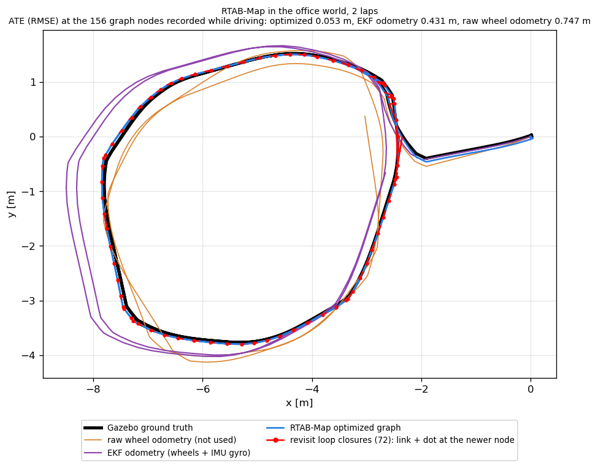
RTAB-Map Option A, Scenario 1 (indoor mapping), reference run in Gazebo. The simulated Husky UR3 with an RGB-D camera drives 2 laps of a planned 17.74 m loop around the counter of the Clearpath office world (36.42 m in 123.27 s of simulated time). A scripted driver stands in for the teleoperator. Left: RViz with the RTAB-Map 3D RGB cloud, 2D occupancy grid and pose graph (loop-closure links in red). Right: Gazebo. The banner marks the first loop closure between nodes 16.44 m of driving apart. The clip ends with the saved 3D reconstruction: an RGB cloud of 472,528 points exported from the database.
How it was checked: An independent verifier recomputed the database numbers with its own code and checked the clip; a re-verification confirmed the fixes.
ECA24Verified with notes
A: Scenario 2, object-rich environment (required)
Points: Within the rubric rows
Object-rich scene: the RTAB-Map cloud in the world frame with each point coloured by the world object whose box it falls in, labelled: booster, upper stage, Merlin-style engine, sign, tank farm, 3 boulders, Curiosity guest, empty chair, Perseverance guest, table, martian rover guest. The cargo crates (1,838 points) lie outside this view. Right: the 3-D OctoMap of the same session, 97,042 occupied OctoMap leaves (96,913 of 5 cm and 129 merged 10 cm leaves), coloured by height.
How it was checked: An independent verifier recomputed the numbers from the RTAB-Map database and the bag with its own code; a re-verification confirmed the fixes.
ECA25Verified with notes
A: Scenario 3, multi-session mapping
Points: +5 (EA-B1 manual)
Web copy: 960 x 540, 30 fps, 106.0 s, 1.3 MB.
Still from the clip, back on the session 1 loop. RTAB-Map Option A, Scenario 3: multi-session mapping (reference run in Gazebo, Mars Thanksgiving world v3). RTAB-Map restarts on a copy of the session 1 database in localization mode and has localized on the known loop before the clip starts. At the switch point the course controller's mapping switch asks for a service name this launch does not provide, so RTAB-Map's own mapping-mode service is called: RTAB-Map switches to mapping at sim 89.7 s, after 10 localization matches, and the new nodes form session 2 of the same database. Links between the sessions form on the known south leg (48 of the 108); the robot then maps the area near the cargo crates and rejoins the session 1 east leg, where more links close the loop (55). The database info reports 2 sessions. The database holds 583 session 1 nodes and 195 session 2 nodes (483 and 89 of them in the optimized graph); 108 links join the two sessions. Known map area: 558.5 m2 after session 1, 645.0 m2 merged (86.5 m2 more). Not all of session 1 survives the merge: about 1.4 m2 of cells that session 1 marked occupied are free in the merged map, most of them around the engine display at (8.0, -3.2) inside the session 1 loop, plus a small patch near (4.3, -6.8); the occupied area falls from 9.24 to 8.99 m2. Session 2 observed almost all of these cells as free, and in the clip they fade from the RViz grid soon after the switch to mapping. Merging moved the session 1 nodes by at most 0.006 m. Session 2 node positions after merging, compared with Gazebo ground truth: median 0.02 m over the 89 session 2 nodes in the optimized graph. Left: RViz (RTAB-Map grid, graph in blue, lidar in red; the links between the sessions are short segments on the route, shown in red in the triptych). Right: Gazebo. A scripted driver stands in for the teleoperator; RTAB-Map never sees ground truth.
How it was checked: An independent verifier recomputed the numbers from the RTAB-Map databases and logs with its own code; a re-verification confirmed the fixes.
Extra credit option B: SAMWISE
ECB0 to ECB30: SAMWISE text-driven segmentation on the robot, from installation to the advanced options. 31 rows: 30 Verified with notes, 1 Fallback.
Points: 50 (website adds +25 for an advanced feature); FA26 grader: 24 automated + 26 manual
Option B at a glance: the three task videos, the automated grade of the reference package and a manual rubric self-check. The course autograder gives 23.5 of 24 automated points; it misses EB-T07 (0 of 0.5), a static check that wants try/except inside the subscription callback itself, while this node keeps its try/except blocks in helper methods (the live test with four bad inputs passed). The course staff self-check, which is not a grade, marks 12 of the 16 manual items met and 4 partly met.
How it was checked: An independent verifier recomputed the numbers from the bag, the logs and the autograder output; a re-verification confirmed the fixes.
Status card: the detailed card shows commands, file paths, grader thresholds or machine details, so it stays with the course staff.
SAMWISE installed (Option B): both official checkpoints load from the official code at commit 7cda3f7, with four small Python 3.12 / torch 2.10 compatibility patches to its bundled fairseq files (Python 3.12.3, torch 2.10.0, CUDA 12.9). Each checkpoint matches its published md5 and loads with 0 missing and 0 unexpected keys; the model has 210.77 M parameters, 5.24 M of them SAMWISE's trainable adapters, memory encoder and text projection. A warm bf16 forward on one frame takes 0.034 s with the YT-VOS checkpoint and 0.072 s with MeViS (peak CUDA memory 2.79 GB). Started cold in the middle of the orbit (frame 300), the YT-VOS masks cover mostly other regions (IoU 0.18 for one frame, 0.07 for a 4-frame clip), which is why every evaluation on this page streams each video from frame 0.
How it was checked: Independent verifiers recomputed the numbers from the raw masks and labels with their own code; the last re-verification left one internal item, since closed.
ECB2Verified with notes
B: ROS 2 package samwise_ros2
Points: 2 (EB-T02 2)
Status card: a code-type deliverable (code, configuration, a script or a README), shown only as a status card because the reference solution code is never public.
The submission in the handout layout (23 files): the ament_python package samwise_ros2 (version 0.2.0) with the SAMWISE node, the robot controller, the RViz2 markers, utilities and 9 unit tests, the parameter file and the RViz2 layout; the launch file again at the top level; the three task videos, the 2-minute bag and the report. Autograder EB-T02: 2 of 2.
How it was checked: An independent verifier recomputed the numbers from the bag, the logs and the autograder output; a re-verification confirmed the fixes.
ECB3Verified with notes
B: dependencies resolved
Points: 1 (EB-T03 0.5 + EB-M1.3 0.5)
Status card: a code-type deliverable (code, configuration, a script or a README), shown only as a status card because the reference solution code is never public.
The package declares its ROS 2 dependencies, among them cv_bridge, vision_msgs, image_transport, tf2_ros and rviz2, and pins the model's Python packages for a Python 3.12 virtual environment: torch 2.10.0 and torchvision 0.25.0 (CUDA 12.9 wheels), transformers 4.42.3, numpy 1.26.4 and others, plus four patches that make the vendored fairseq run on Python 3.12 and torch 2.6 or newer. Autograder EB-T03: 0.5 of 0.5.
How it was checked: An independent verifier recomputed the numbers from the bag, the logs and the autograder output; a re-verification confirmed the fixes.
SAMWISE part of the ROS 2 graph, captured live during the Task 1 session from the node information of every node. samwise_node subscribes to the camera image (/camera/image_raw, relayed from the simulated ZED camera) and to /object_query, and publishes /samwise/segmentation, /samwise/object_centroid, /samwise/bounding_box, /samwise/mask and /samwise/task. robot_controller turns the mask and depth into base commands, grasp targets and moveit_servo twists; samwise_markers draws the RViz2 markers. Logging tools are left out.
How it was checked: An independent verifier recomputed the numbers from the task bags and logs and checked the videos; a re-verification confirmed the fixes.
The three SAMWISE outputs in the 2-minute bag: /samwise/object_centroid and /samwise/bounding_box with 1104 messages each, and /samwise/segmentation stored as a JPEG copy of every third overlay (385 messages). The box carries the expression as its class id, and the overlay shows the mask, the box, the centroid and the expression drawn by the node. Autograder EB-T06: 3 of 3.
How it was checked: An independent verifier recomputed the numbers from the bag, the logs and the autograder output; a re-verification confirmed the fixes.
ECB6Verified with notes
B: memory bank management
Points: 4 (EB-M2.3 manual 4)
Web copy: 960 x 540, 10 fps, 18.0 s, 0.7 MB.
Memory-bank management in the course ROS 2 node: orbit frames 690-869 replayed at 10 Hz (180 frames, 18 s). The node tracks 'the turkey flying in circles above the table' while its bank grows by 4 entries per clip up to 20 (it is pruned there); at frame 780 a new query arrives on /object_query and the node logs 'new prompt "the turkey running under the table" (from /object_query) -> memory reset: bank 20 -> 0 entries', then starts again with 4 entries after its first clip. Mean IoU 0.69 before the switch (90 frames, median 0.93) and 0.00 after (90 frames): after the reset 94 % of the masked pixels lie on the flying turkey again (post hoc count), so the reset works but the new query is grounded on the wrong turkey. The node's masks arrived over 24.8 s for the 18 s replay; the clip is shown at the replay rate.
How it was checked: Independent verifiers recomputed the numbers from the raw masks and labels with their own code; the last re-verification left one internal item, since closed.
ECB7Verified with notes
B: error handling
Points: 3 (EB-T07 0.5 + EB-M2.4 2.5)
Status card: a code-type deliverable (code, configuration, a script or a README), shown only as a status card because the reference solution code is never public.
Bad inputs sent to the running samwise_segmentation_node: a 16UC1 frame, a 0x0 frame, an empty query and a 32-word query. Each produced one handled warning (4 in total); the node kept its prompt, stayed up and segmented all 24 valid frames that followed, keeping pace with the feed of one frame every 0.26 s (3.8 Hz; results arrive in clips of 4 about every 1.04 s). The node's error handling covers image conversion (cv_bridge), inference (CUDA out of memory: empty the cache, halve the clip window, skip the clip) and query parsing (empty or overlong queries are refused).
How it was checked: An independent verifier recomputed the numbers from the task bags and logs and checked the videos; a re-verification confirmed the fixes.
ECB8Verified with notes
B: query parsing
Points: 3 (EB-T08 1 + EB-M3.1 2)
Status card: this recording or log shows terminal commands, which this page does not publish.
One continuous Task 1 session: the queries on /object_query beside the node and controller lines that parse each query. The parser splits a command into an action and an object expression: 'Find the sample collection bin' gives segment and 'the sample collection bin', 'Pick up the red cube' gives pick and 'the red cube', 'Point at the red cube' gives point and 'the red cube'. Every new expression resets the SAMWISE memory bank. The task executor publishes each query 3 times; the log merges the repeats.
How it was checked: An independent verifier recomputed the numbers from the task bags and logs and checked the videos; a re-verification confirmed the fixes.
Four query types, 10 s each. Object, 'Pick up the red cube', and action, 'Follow the moving orange ball', come from the live tasks (green mask, yellow box, red centroid). The plan named the action query 'the ball rolling'; no clip with that query exists, so the closest live clip is shown. Spatial, 'the leftmost rover at the table', and complex, 'the turkey running under the table' (an action plus a spatial relation, like the handout's 'The red car turning left'), come from the offline evaluation on rendered frames (SAMWISE mask cyan, ground truth yellow): the rover query reaches a mean IoU of 0.34 (median 0.05) on these frames and the running-turkey query an IoU of 0.000, its mask lying mostly on the flying turkey. The rover query is shown instead of 'the leftmost cup' because the simulator labels rovers but not cups.
How it was checked: An independent verifier recomputed the numbers from the bag, the logs and the autograder output; a re-verification confirmed the fixes.
ECB10Verified with notes
B: dynamic query switching (robust to query changes)
Points: 3 (EB-T10 2 + EB-M3.3 1)
Every query switch in the 2-minute bag (4 switches over five queries). After each switch the node finished the frames of the old prompt, reset the memory bank and published the first box labelled with the new expression 0.49 to 0.67 s later in the simulation clock (1.42 to 3.04 s of wall-clock time). 'The rock sample on the left' produced a box in only 2 frames before the next query. Autograder EB-T10: 2 of 2.
How it was checked: An independent verifier recomputed the numbers from the bag, the logs and the autograder output; a re-verification confirmed the fixes.
ECB11Verified with notes
B: accurate segmentation (IoU above 0.6)
Points: 4 (EB-M4.1 manual 4)
SAMWISE (YT-VOS checkpoint with the CME head, bf16, clips of 4 frames) against the simulator's own semantic labels on three camera paths of the Mars Thanksgiving world: the moving set (dynamic_D, 200 frames at 10 Hz, both turkeys moving), the parked set (static_S, same camera loop, turkeys parked) and the 900-frame orbit (hero_table, 30 fps). 11 object queries and one spatial query were registered before any inference. This strip: the moving set (dynamic_D). Cyan = SAMWISE mask, yellow outline = ground truth; each tile is the frame whose IoU is closest to that query's median (chosen by rule). Only 4 of 36 query and path pairs clear the handout's bar of mean IoU above 0.6: 'the turkey above the table' on all three paths (0.939, 0.878 and 0.800) and 'the big billboard sign' on the orbit (0.894). The Curiosity rover (0.432 to 0.551) and the spatial query 'the leftmost rover at the table' (0.580 on the parked set) come closest; 'the turkey under the table' peaks at a mean IoU of 0.081 and the three rocket queries at 0.006. For 'the small rover at the side of the table' and 'the rocket booster on landing legs', 59 % to 97 % of the masked pixels lie on the flying turkey (post hoc count), so these failures pick the wrong object rather than draw loose outlines.
How it was checked: Independent verifiers recomputed the numbers from the raw masks and labels with their own code; the last re-verification left one internal item, since closed.
ECB12Verified with notes
B: real-time processing above 5 FPS
Points: 3 (EB-T11 automated 3)
Measurement-only session (no RViz, no Gazebo GUI, no screen recording, no MoveIt), query 'the orange ball': SAMWISE published masks at a median of 8.0 Hz over 30 two-second windows of wall-clock time (472 masks in 60 s; camera frames arrived at a median 8.0 Hz; real-time factor 0.782). Pre-registered pass: median at least 5.0 Hz.
How it was checked: An independent verifier recomputed the numbers from the raw run outputs with its own code, against the tests registered before the runs, and checked the videos; a re-verification confirmed the fixes.
ECB13Fallback
B: temporal consistency
Points: 3 (EB-M4.3 manual 3)
Web copy: 960 x 540, 30 fps, 17.0 s, 0.2 MB.
Reason: The pre-registered acceptance did not pass: the mask was lost after the occlusion (after the ball came out from behind the post, SAMWISE was on it in 0.0 % of the next 30 outputs; the pre-registered pass needed at least 80 % within 5 frames).
With the query 'the orange ball' and the robot still, the ball rolled at 0.25 m/s behind a 16 cm post 0.8 m in front of the camera and was fully hidden for 0.755 s of simulated time (8 SAMWISE outputs). Before the occlusion the mask box was on the ball in 100 % of 30 outputs; after the ball came out, SAMWISE did not settle back on the ball and was on it in 0.0 % of the next 30 outputs (pre-registered pass: within 5 frames and at least 80 %). While the ball was hidden: 0 outputs without a mask, 0 with the box on the hidden ball's position, 8 elsewhere. Ground truth is the ball's scripted path and an exact ray test against the post.
How it was checked: An independent verifier recomputed the numbers from the raw run outputs with its own code, against the tests registered before the runs, and checked the videos; a re-verification confirmed the fixes.
ECB14Verified with notes
B: Husky movement control
Points: 2 (EB-T12 1.5 + EB-M5.1 0.5)
Top: in the 2-minute bag the base motion is the scripted docking creep toward the bin on simulator ground truth (443 non-zero commands, 0.59 m of odometry), which the automated test counts (EB-T12: 1.5 of 1.5). Middle and bottom: base control driven by SAMWISE in Task 2: the centroid bearing sets the yaw rate and the median mask depth the speed that holds 1.0 m. While the ball rolled, the ground-truth camera to ball surface distance stayed inside 1.0 +/- 0.3 m in 59.5 % of the 0.1 s samples (median 0.906 m), and the robot drove 7.19 m.
How it was checked: An independent verifier recomputed the numbers from the bag, the logs and the autograder output; a re-verification confirmed the fixes.
ECB15Verified with notes
B: UR3 arm control
Points: 2 (EB-T13 1.5 + EB-M5.2 0.5)
The six UR3 joints during 'Pick up the red cube'. The dashed line marks the grasp target computed from the SAMWISE mask and the depth image; grey bands are the MoveIt 2 motions that executed. Forward kinematics of the recorded joint states puts tool0 0.2 mm from the planned grasp pose at the end of the descent. Largest joint range: elbow 1.57 rad. Autograder EB-T13: 1.5 of 1.5.
How it was checked: An independent verifier recomputed the numbers from the bag, the logs and the autograder output; a re-verification confirmed the fixes.
ECB16Verified with notes
B: gripper control
Points: 1 (EB-T14 automated 1)
The gripper joint and its commands in the bag: the command 1.05 rad closes the gripper on the cube and the finger stops on it (up to 0.76 rad, a friction grasp); the command 0.0 rad opens it after the place. Commands on /rh_p12_rn_position/command are relayed to /gripper_controller/commands. Autograder EB-T14: 1 of 1.
How it was checked: An independent verifier recomputed the numbers from the bag, the logs and the autograder output; a re-verification confirmed the fixes.
ECB17Verified with notes
B: README (code quality)
Points: 1 (EB-T15 0.5 + EB-M6.1 0.5)
Status card: a code-type deliverable (code, configuration, a script or a README), shown only as a status card because the reference solution code is never public.
The submission README (12750 characters): requirements (Ubuntu 24.04, ROS 2 Jazzy, Gazebo Harmonic, an NVIDIA GPU, a Python 3.12 virtual environment), installation with the four fairseq patches, building and testing with colcon, launching, topics, parameters, query examples, the task instructions, results, limits and an AI-use section. Autograder EB-T15: 0.5 of 0.5.
How it was checked: An independent verifier recomputed the numbers from the bag, the logs and the autograder output; a re-verification confirmed the fixes.
ECB18Verified with notes
B: technical report (3 pages)
Points: 2 (EB-T16 0.5 + EB-M6.2 1.5)
Status card: the report quotes commands or file names of the code, so it is not linked.
The 3-page technical report: the node design (clips, memory bank, error handling, query parsing), the robot controller, offline IoU against simulator label masks for 12 queries, speed offline and live, the three tasks, how the runs were recorded, failures and limitations, and the AI-use statement. Autograder EB-T16: 0.5 of 0.5.
How it was checked: An independent verifier recomputed the numbers from the bag, the logs and the autograder output; a re-verification confirmed the fixes.
ECB19Verified with notes
B: video demonstrations (the three task videos)
Points: 2 (EB-T17 1 + EB-M6.3 1)
Web copy: 1280 x 720, 30 fps, 23.3 s, 0.6 MB.Web copy: 1280 x 720, 30 fps, 29.3 s, 1.4 MB.Web copy: 1280 x 720, 30 fps, 33.0 s, 0.8 MB.
Each video shows RViz2 (SAMWISE overlay on top, 3D markers below) beside the Gazebo Harmonic GUI, with a HUD for the query, SAMWISE rate, centroid, median mask depth, controller state and a task line. Task 1 23.3 s, Task 2 29.3 s, Task 3 33.0 s, all played at 1.5x simulation time.
How it was checked: An independent verifier recomputed the numbers from the task bags and logs and checked the videos; a re-verification confirmed the fixes.
ECB20Verified with notes
B Task 1: static object manipulation ('Pick up the red cube')
Points: Website 5; one third of EB-T17; HB: the three scenarios together are 'Task 3: Demonstration Scenarios (10 points)', the 'Visual Segmentation Demo 10' category, whose HB rubric scores accuracy 4 + real-time 3 + temporal consistency 3
Web copy: 1280 x 720, 30 fps, 23.3 s, 0.6 MB.
SAMWISE masks the 5 cm cube on the bench. robot_controller back-projects the mask pixels with depth into the robot frame and publishes a grasp box 1.08 s after the query; its centre is 2.6 mm from the simulator's cube centre. MoveIt 2 plans to the ready pose and the pre-grasp, descends in a straight line, and the gripper closes (friction grasp; the attach-joint fallback was not needed). The cube rises 7.8 cm. No IK solution existed above the yellow ring that marks the planned spot, so the executor used an unmarked fallback spot 0.42 m away on the same bench: the cube ends 1.8 cm from that point and 0.44 m from the ring, which stays empty. The planner found no path over the fallback spot in 2 attempts, so the cube was lowered onto it with a straight-line path. The mask stayed on the cube from 50.4 s to 76.7 s; from 76.8 s, with the cube released at the edge of the image, it moves to a boulder about 3.3 m away (median mask depth).
How it was checked: An independent verifier recomputed the numbers from the task bags and logs and checked the videos; a re-verification confirmed the fixes.
ECB21Verified with notes
B Task 2: dynamic tracking ('Follow the moving ball')
Points: Website 5; one third of EB-T17; HB: part of 'Task 3: Demonstration Scenarios (10 points)'
Web copy: 1280 x 720, 30 fps, 29.3 s, 1.4 MB.
The ball is released first and the query follows 1.1 s later, so the base does not start before the ball moves. The centroid's bearing sets the yaw rate and the median mask depth sets the forward speed that holds 1.0 m; the base stops while the ball is hidden behind the boulder and resumes when SAMWISE finds it again. Ground truth from the ball's release to 3 s after it stopped (37.2 to 79.1 s of simulation time): with the ball in view and a fresh detection, the centroid was on the ball in 190 of 198 samples of 0.1 s (96 %; 51 of 51 SAMWISE clips of 4 frames, judged on the newest centroid of each clip), and the camera to ball surface distance was inside 1.0 +/- 0.3 m in 62 % of the samples (median 0.93 m); over the 39.0 s ball path alone the share is 59 % (median 0.91 m). When the ball sits at the bottom edge of the image the HUD check reads 'ball out of view' because its centre projects below the frame. An earlier run that sent 'Follow the moving ball' while the ball was still at rest locked onto the rocket stand and is not shown.
How it was checked: An independent verifier recomputed the numbers from the task bags and logs and checked the videos; a re-verification confirmed the fixes.
ECB22Verified with notes
B Task 3: custom query
Points: Website 5; one third of EB-T17; HB: part of 'Task 3: Demonstration Scenarios (10 points)'
Web copy: 960 x 540, 30 fps, 43.0 s, 0.6 MB.
A registered rule picked the query pair 'the turkey above the table' / 'the Curiosity rover' from a pre-screen on the Mars Thanksgiving captures (1 of 4 registered pairs eligible). Live in Gazebo, with the robot still, 'the turkey above the table' put the SAMWISE centroid on the flying turkey in 100 % of 48 detections (0.0 % on the Curiosity rover); 'the Curiosity rover' put it on the Curiosity rover in 98.0 % of 51 detections (2.0 % on the flying turkey). Pre-registered pass: at least 10 detections, at least 60 % on the target and at most 20 % on the other object, for each query.
How it was checked: An independent verifier recomputed the numbers from the raw run outputs with its own code, against the tests registered before the runs, and checked the videos; a re-verification confirmed the fixes.
ECB23Verified with notes
B advanced: multi-object tracking
Points: +25 (website; choose one; not graded by the FA26 grader)
Web copy: 960 x 540, 10 fps, 20.0 s, 1.5 MB.
Two instances of the course ROS 2 node run at once on one GPU, namespaced /samwise_a and /samwise_b, each with its own query and mask topics, on the same 10 Hz replay of the moving set (200 frames). /samwise_a ('the turkey above the table', cyan) received 200 of 200 masks with mean IoU 0.939 (median 0.947, 100 % of frames above 0.6); /samwise_b ('the turkey under the table', magenta) received 200 of 200 with mean IoU 0.000: its masks lie mostly on the Curiosity rover (55 % of masked pixels, post hoc count), the same failure as offline. The masks on both topics are pixel-identical to the offline evaluation on all 200 frames. Sharing one GPU, the two nodes ran slower than real time: the masks of each topic arrived over 52.5 s for the 20 s replay, and the clip is shown at the replay rate. Where both masks cover the same pixels the colours mix to violet: the two masks overlap on 86 of the 200 frames, and /samwise_b covers at least half of the cyan flying-turkey mask on 41 of them (frames 36-75 and 123), so the flying turkey appears violet there; 13 % of /samwise_b's masked pixels lie on the flying turkey (post hoc count).
How it was checked: Independent verifiers recomputed the numbers from the raw masks and labels with their own code; the last re-verification left one internal item, since closed.
ECB24Verified with notes
B advanced: action-based queries
Points: +25 (website)
Web copy: 960 x 540, 10 fps, 20.0 s, 2.4 MB.
Action queries on the moving set (top, both turkeys moving) and on the parked control with the same camera loop (bottom), 10 Hz, one video per query from frame 0. 'the turkey flying in circles above the table' is resolved on all 200 moving frames in a row (IoU of 0.5 or more; mean 0.946) and 'the turkey that is flying' for 83 frames in a row (mean 0.758), but the parked control scores as high or higher (0.950 and 0.927), so the queries were resolved by appearance and place, not by motion. 'the turkey running under the table' and 'the turkey that is running' score 0.000 on both sets: 65 % and 96 % of their masked pixels on the moving set (87 % and 87 % on the parked set) lie on the flying turkey (post hoc count). Deviation from the pre-registration: the registered queries asked for a side-by-side clip (moving set left, parked set right); the clip stacks the two sets instead (moving top, parked bottom), with the four queries as the columns of one 1920 x 1080 frame. Only the layout differs: the four queries, the two sets and the IoU computation are the registered ones.
How it was checked: Independent verifiers recomputed the numbers from the raw masks and labels with their own code; the last re-verification left one internal item, since closed.
ECB25Verified with notes
B advanced: MoveIt2 autonomous pick-and-place
Points: +25 (website)
Web copy: 960 x 540, 30 fps, 36.4 s, 0.5 MB.
SAMWISE segmented the red cube from the query 'Pick up the red cube' and its mask gave the grasp box (box centre 0.3 cm from the ground-truth cube centre). MoveIt 2 ran 11 arm motions and plan checks, all with collision checking on. The cube was lifted 7.8 cm, carried with the tool turned 30 degrees about the vertical axis and released on the marked ring: its centre ended 1.4 cm from the ring centre (ring radius 4.5 cm), the fingers opened to 0.106 rad and the cube moved 0.0 mm in the last second. The ring centre was registered before the run; the place did not use the mask. Up to the lift the mask stayed on the cube (median mask depth 0.319 m); at 87.8 s of simulated time, while the cube was carried to the ring, it moved to a distant object (median depth 3.337 m) and stayed there to the end of the clip.
How it was checked: An independent verifier recomputed the numbers from the raw run outputs with its own code, against the tests registered before the runs, and checked the videos; a re-verification confirmed the fixes.
ECB26Verified with notes
B advanced: custom fine-tuning
Points: +25 (website)
SAMWISE advanced option, custom fine-tuning: no measurable gain over the official checkpoint. Only the cross-modal temporal adapters and the conditional memory encoder were trained (4.9 M of 210.8 M parameters), starting from the official Ref-YouTube-VOS checkpoint, for 90 minutes on one GPU, on 800 simulator frames of the Mars Thanksgiving world with 27 referring expressions generated from the simulator's label names (each used on both training videos, 54 expression and video pairs). Both checkpoints were then scored with the unchanged, pre-registered offline SAMWISE evaluation. On the held-out orbit around the table (12 queries) the mean IoU went from 0.324 to 0.302 (gain -0.022, 95 % interval -0.122 to +0.076); on the training camera loop with both turkeys moving (16 queries) it went from 0.295 to 0.320 (gain +0.026, 95 % interval -0.149 to +0.205). Both intervals include zero. The training loss fell from 1.23 to 0.52, but gains on some queries were cancelled by losses on others: 8 of 28 query and test-set pairs improved by more than 0.05, 10 worsened by more than 0.05, and 7 of the 8 rover pairs ended at 0.00. Training and test share the same world and objects, so even a gain would only have shown adaptation to one scene.
How it was checked: Independent verifiers recomputed the IoU, gains and intervals from the raw masks with their own code; the last re-verification left one internal item, since closed.
ECB27Verified with notes
B advanced (handout only): real-time optimization (above 20 FPS at 512x512, INT8)
Points: Recognition only
Speed of four SAMWISE configurations on the moving set (2 queries x 200 frames, clips of 4, one GPU with no other process on it): the default 1024 x 1024 bf16 model runs at 12.31 FPS model-only and 8.81 FPS end to end. A 512 x 512 encoder reaches 21.46 FPS end to end (21.76 FPS with torch.compile), so 2 of 4 configurations pass 20 FPS end to end. The handout's optional target, above 20 FPS at 512 x 512 with INT8, is met model-only (40.25 FPS) but not end to end (18.65 FPS); INT8 weight-only (torchao 0.16.0) cuts peak memory from 1.43 to 0.84 GB at the same flying-turkey IoU (0.888). End to end includes PNG decode, resize and the copy to the GPU, one clip at a time without prefetch workers.
How it was checked: Independent verifiers recomputed the numbers from the raw masks and labels with their own code; the last re-verification left one internal item, since closed.
ECB28Verified with notes
B: 2-minute SAMWISE rosbag
Points: Evidence for EB-T05, EB-T06 and EB-T08 to EB-T14
Status card: bags are never published.
sqlite3 bag of one continuous Task 1 session, recorded with simulation time: 119.2 s, 31.3 MB, 24,298 messages on 16 topics. Camera and overlay stored as JPEG (camera 2.0 Hz), 5 distinct queries, centroid 9.5 Hz of simulation time while a query is active (the simulator ran at about 0.33x real time, so about 3.2 per wall-clock second), 443 non-zero base commands with 0.59 m of odometry (the docking creep while SAMWISE segments the bin), UR3 joint motion and two gripper command values.
How it was checked: An independent verifier recomputed the numbers from the task bags and logs and checked the videos; a re-verification confirmed the fixes.
ECB29Verified with notes
B: code package, launch file and config
Points: No separate points
Status card: a code-type deliverable (code, configuration, a script or a README), shown only as a status card because the reference solution code is never public.
The launch file starts four processes: the SAMWISE node with the model's virtual environment, the robot controller, the RViz2 markers and RViz2 with its layout; all parameters come from one parameter file. The launch arguments for the Python environment, the SAMWISE code and the checkpoint are required and have no machine-specific defaults.
How it was checked: An independent verifier recomputed the numbers from the bag, the logs and the autograder output; a re-verification confirmed the fixes.
ECB30Verified with notes
B: SAMWISE results visualized in RViz2 (mask overlay, centroid marker and bounding box)
Points: Within the website's ROS 2 node implementation category (25) / the handout's 'Robot Integration' (5); no separate grader test
Status card: a code-type deliverable (code, configuration, a script or a README), shown only as a status card because the reference solution code is never public.
RViz2 shows /samwise/segmentation (mask, box and centroid drawn by samwise_node) and the MarkerArray /samwise/markers: the 3D centroid sphere at the median mask depth, the bounding box as a line strip and the query label.
How it was checked: An independent verifier recomputed the numbers from the task bags and logs and checked the videos; a re-verification confirmed the fixes.
Early-submission bonus
ES1 to ES5: every announced Part A early-submission tier and the early-bonus autograder. 5 rows: 5 Verified with notes.
ES1Verified with notes
Early bonus: Part A by Nov 7, 2025 (+10, VER1.16 PDF)
Points: +10
Original Part 1 slide tier (VER1.16): +10 points for submitting Part A by Nov 7, 2025. It is struck on the timeline because the extra-credit guide posted in November 2025 lists +20 before Nov 9 and +10 before Nov 14 instead, and the course pages follow the guide.
How it was checked: An independent verifier checked every number against its cited source and the grader runs; a re-verification confirmed the fixes.
ES2Verified with notes
Early bonus: Part A before Nov 9, 2025 (+20; the value of the Silver tier of the first, 175-point v11 build; the FA26 grader's silver tier, 12 days early)
Points: +20
+20 points for submitting Part A before Nov 9, 2025: the tier of the extra-credit guide (in force), and the value of the Silver tier of the first 175-point rubric v11 build, which the course pages cite but which is not on disk; whether the two stack is not stated in any source. The FA26 early-bonus autograder, set to the Fall 2025 due date, awards silver (20/25) to the reference Part 1 package uploaded on Nov 8 at noon.
How it was checked: An independent verifier checked every number against its cited source and the grader runs; a re-verification confirmed the fixes.
ES3Verified with notes
Early bonus: Part A before Nov 14, 2025 (+10; the FA26 bronze tier, shipped disabled)
Points: +10
+10 points for submitting Part A before Nov 14, 2025 (extra-credit guide tier). In the FA26 autograder this is the bronze tier, 7 days before the due date, and it ships disabled; enabled only in a demonstration copy of the configuration, an upload on Nov 13 at noon earns bronze (10/25).
How it was checked: An independent verifier checked every number against its cited source and the grader runs; a re-verification confirmed the fixes.
ES4Verified with notes
Early bonus Gold: Part A before Nov 7 (+25; first, 175-point v11 build, and the FA26 grader's gold tier, 14 days early)
Points: +25
Gold: +25 points for submitting Part A before Nov 7, 2025, the tier of the first 175-point rubric v11 build (cited on the course pages; that build is not on disk). The FA26 autograder's gold tier, 14 days before the due date, awards 25/25 to the reference Part 1 package uploaded on Nov 6 at 8:00 PM.
How it was checked: An independent verifier checked every number against its cited source and the grader runs; a re-verification confirmed the fixes.
ES5Verified with notes
Early-bonus Gradescope assignment: EE-T01 completeness and work-evidence gate (0 pts) and EE-T02 tier award
Points: Gate 0; award up to 25
Early-bonus autograder (FA26 test code) on the reference Part 1 package, emulated with the Fall 2025 dates (Part 1 due Fri Nov 21, 2025, 11:00 PM CST). EE-T01 gate: Part 1 automated score 19.00 / 19.0 (the gate needs 15.20) and all six work-evidence checks pass. EE-T02: an upload on Nov 6 at 8:00 PM earns gold (25/25), on Nov 8 at noon silver (20/25), on Nov 15 at noon nothing (0/25); an upload on Nov 13 at noon earns bronze (10/25) only in a demonstration copy of the configuration, since bronze ships disabled. As shipped, with no Part 1 due date set, the autograder awards 0.
How it was checked: An independent verifier checked every number against its cited source and the grader runs; a re-verification confirmed the fixes.
Policies and cross-cutting
ECP0, XC1, XC2 and ECO1: the extra-credit policy, the AI-use statement, the grader video denylist and a deck suggestion. 4 rows: 3 Verified with notes, 1 Human step.
ECP0Verified with notes
Extra-credit policy card (both options)
Points: Up to 100 extra-credit points (50 + 50)
Extra-credit policy for Fall 2025, both options: up to 100 points (RTAB-Map 50, SAMWISE 50), both options allowed, due Tue Dec 9, 2025, 11:00 PM CST, no late submissions and no extensions, individual work only, one ZIP per option in two separate Gradescope assignments. The handouts allowed 500 MB and 200 MB uploads, but a direct Gradescope upload takes at most 100 MB in 256 files.
How it was checked: An independent verifier checked every number against its cited source and the grader runs; a re-verification confirmed the fixes.
XC1Verified with notes
AI-assistant use disclosure in each reference package (AI tools cited; chatbot transcripts if used for debugging)
Points: 0 (academic-integrity requirement)
Status card: a code-type deliverable (code, configuration, a script or a README), shown only as a status card because the reference solution code is never public.
AI-use statement for every reference README and report: which AI coding agents built the reference and what they did, where every number comes from (the recorded runs), who keeps the agent session logs (the course staff), and the course AI policy that applies to students. A small gate script checks that each README or report carries the section.
How it was checked: An independent verifier checked every number against its cited source and the grader runs; a re-verification confirmed the fixes.
XC2Human step
Add every newly published reference video to the FA26/SP27 grader's video denylist
Points: P1-T11: 0.5 of 1
Left for the course staff: The course staff upload the rebuilt grader zips to Gradescope and set the Part 1 due date in the grader configuration.
Every reference video published on this page is added to the FA26/SP27 grader's video denylist by the course hook, which then rebuilds and re-verifies the grader zips; a listed video scores 0 on the half of the Part 1 check that asks whether a submission is a course reference video.
How it was checked: The denylist hook and the regrade were checked on the grader tree; the Gradescope upload is left to the course staff.
ECO1Verified with notes
Deck suggestion (not an A4 extra-credit option): AI + robotics with Open WebUI (locally hosted LLM interface)
Points: None (the deck slide says 'EXTRA credit' but gives no points or submission; A4 extra credit is Options A and B only)
The SLAM deck (slide 19) suggests trying Open WebUI, a locally hosted browser interface for large language models (docs.openwebui.com, github.com/open-webui/open-webui). It carries no points and no submission; A4 extra credit is Options A and B only (50 + 50).
How it was checked: An independent verifier checked the screenshot and the deck slide against their sources; a re-verification confirmed the fixes.